Simple Domain Modeling Language
Table of Contents
- 1. Introduction
- 2. The Surface Syntax
- 3. Capturing Model Constraints
- 4. The RDF Semantics
- 5. Walk-Through Example
- 6. Implementation and Tools
- 7. Appendix: Unicode Usage
- 8. Appendix: Standard Library
- 8.1. SDML Module
- 8.2. Commonly Used Modules
- 8.2.1. Dublin Core Elements
- 8.2.2. DCMI Abstract Model
- 8.2.3. DCMI Type Vocabulary
- 8.2.4. DCMI Metadata Terms
- 8.2.5. The OWL 2 Schema Vocabulary
- 8.2.6. The RDF Concepts Vocabulary
- 8.2.7. The RDF Schema Vocabulary
- 8.2.8. Simple Knowledge Organization System Namespace
- 8.2.9. The xml Namespace
- 8.2.10. XML Schema Datatypes
- 8.3. Constraint Language Library
- 8.3.1. The Type
Type - 8.3.2. Equality and Inequality
- 8.3.3. Identifiers
- 8.3.4. Module Definition
- 8.3.5. Imports
- 8.3.6. Datatypes and Values
- 8.3.7. Sequence Types
- 8.3.8. Annotations
- 8.3.9. Structured Type Members
- 8.3.10. Entities
- 8.3.11. Entity Events
- 8.3.12. Enumerations
- 8.3.13. Structures
- 8.3.14. Disjoint Unions
- 8.3.15. Property Definitions
- 8.3.16. Formal Constraints
- 8.3.17. Constraint Sentences
- 8.3.18. Constraint Terms
- 8.3.19. Constraint Environment
- 8.3.1. The Type
- 9. Appendix: Surface Syntax to RDF
- 9.1. Whitespace
- 9.2. Comments
- 9.3. Identifiers
- 9.4. Values
- 9.5. Modules
- 9.6. Imports
- 9.7. Annotations
- 9.8. Constraints
- 9.9. Data Type Definitions
- 9.10. Entity Definitions
- 9.11. Enumeration Definitions
- 9.12. Event Definitions
- 9.13. Structure Definitions
- 9.14. Union Definitions
- 9.15. Property Definitions
- 10. Appendix: Constraint Semantics
- 11. Appendix: UML Profile for SDML
- 12. License
- 13. Tables of Other Content
1. Introduction
The Simple Domain Modeling Language1 is a small data-oriented language for constructing, documenting, and reasoning about a conceptual domain model. For a background on domain modeling see section 1.1. At it's core SDML comprises 1. an Semantic Model whose structure and semantics are described in RDF2 by an OWL3 ontology (see section 4 for more details), and 2. a surface syntax for editing and sharing model artifacts (see section 2 for more details). Figure 1 shows the relationship between these high-level components.
This document covers both the semantic model and surface syntax representation as well as the correspondence between them. However, the primary focus of the documentation is the surface syntax as most users will be interacting with it alone.

Figure 1: Model Overview
The language uses some ideas from UML4, a language which is often used in the construction of such models today. However, the goal is to keep the language as small as possible, taking away some options where they don't make sense or where their use may distract from the major purpose of the model. The model also takes some of the language from Domain-Driven Design (DDD)5, namely the separation of entities (an object defined not by its attributes, but its identity) from value objects (an immutable object that contains attributes but has no conceptual identity), simply termed structures in SDML. This model does not include the following DDD first-class concepts: aggregates, repositories, factories, or services.
1.1. What is Domain Modeling?
Domain modeling is the process by which we develop a model of our business domain. In particular, we model what our business does and not how it is done.
There is often confusion around the use of the term Domain Model especially in regard to terms such as Data Model, Class Model, Schema and more. The rest of this section is an attempt to clarify the terminology and how the relevant modeling efforts are undertaken. This is not intended as an exhaustive review of modelling approaches, standards, or technologies and neither does it make any judgement as to the usefulness of any approach or technology.
1.1.1. Model Terminology
A model is an informative representation of an object, person or system. The term originally denoted the plans of a building in late 16th-century English, and derived via French and Italian ultimately from Latin modulus, a measure. As is common in software development the term model is overloaded and it's use can lead to confusion as people have different expectations and assumptions regarding what kind of model is being discussed. To this end we introduce some terminology here that, if simply used as model qualifiers, helps to disambiguate the purpose of any particular model.
For now we will use the following classification to partition the major purpose of different model instances.
- Data: A data model in software engineering is a representation of concepts and the relationships, constraints, rules, and operations to specify data semantics for a chosen domain of discourse. Typically it specifies relations between kinds of things, but may also include relations with individual things. It can provide sharable, stable, and organized structure of information requirements or knowledge for the domain context.
- Behavior: Behavioral languages are designed to describe the observable behavior of complex systems consisting of components that execute concurrently. These languages focus on the description of key concepts such as: concurrency, nondeterminism, synchronization, and communication.
- Process: [Business] process modeling (BPM) in business process management and systems engineering is the activity of representing processes of an enterprise, so that the current business processes may be analyzed, improved, and automated.
A common framework for defining the level of abstraction inherent to a model are the three perspectives introduced by ANSI in 1975 (introduced in section 1.3.
- Conceptual: In the field of computer science a conceptual model aims to express the meaning of terms and concepts used by domain experts to discuss the problem, and to find the correct relationships between different concepts. The conceptual model attempts to clarify the meaning of various, usually ambiguous terms, and ensure that confusion caused by different interpretations of the terms and concepts cannot occur.
- Logical: A logical data model or logical schema is a data model of a specific problem domain expressed independently of a particular database management product or storage technology (physical data model) but in terms of data structures such as relational tables and columns, object-oriented classes, or XML tags. This is as opposed to a conceptual data model, which describes the semantics of an organization without reference to technology.
- Physical: A physical data model (or database design) is a representation of a data design as implemented, or intended to be implemented, in a database management system. In the lifecycle of a project it typically derives from a logical data model, though it may be reverse-engineered from a given database implementation.
With these two classifications we can construct a simple grammar for the qualification of the term model:
Perspective = "conceptual" | "logical" | "physical" Scope = "data" | "behavior" | "process" ModelReference = Perspective, Scope "model"
1.1.2. Modeling Language/Notation
There have been a number of modeling techniques, notations, and languages over the years. The following table describes those in common use today. It is worth noting that after OMG standardization there are common meta-model underpinnings for UML and BPMN.
| Data | Behavior | Process | |
| Conceptual | UML1, Concept Map, Semantic Net | UML2, Flowchart | UML3, BPMN, EPC4 |
| Logical | UML1, EXPRESS, IDEF1X, IE5 | UML2 | BPMN |
| Physical | UML1, … | UML6, Statecharts, Petri net |
- Class and Component diagrams.
- Sequence, State, and Activity diagrams.
- Use Case and Activity diagrams.
- Event-driven Process Chains.
- Information Engineering (IE) introduced the commonly used crows-foot notation.
- Action Semantics and action languages.
UML has a built-in extension mechanism with stereotypes and profiles and data modeling concerns are often introduced with specific extensions such as stereotypes for different key types.
1.1.3. Modeling Themes
(TODO: Complete this section)
Commonality
Variability
- Inheritence
- …
- Interface and Implementation
- …
- (no term)
Scope: Breadth and Depth
1.1.4. Domain-Driven Design
Domain-driven design (DDD) is a software design approach focusing on modeling software to match a domain according to input from that domain's experts. Under domain-driven design, the structure and language of software code (class names, class methods, class variables) should match the business domain.
Within this approach the domain model is usually a conceptual or logical data model that describes the key entities that comprise the domain. The representation of this model can be any of the languages described above although UML is the common. The discipline of domain modeling is unique in it's focus on deriving data/information models directly from the business and stresses the involvement of domain experts from the business in the development of models. Additionally the literature describes specific kinds of model entities and their unique semantics, Entities, Value Objects, Events, and Aggregates, etc. which help focus conversations on key modeling concepts such as identity, lifecycle, and ownership.
Thus, a Domain Model is a conceptual (UML or Ontology) or logical (UML) data model developed according to a specific methodology (DDD) and employing a specific meta-language (UML Profile).
Some of the defined kinds, Repository, Factory, and Service are lower-level concerns and the lack of a clear separation between different levels of abstraction is one criticism of the method. Additionally terms such as Entity as defined by DDD are not entirely compatible with the use in pre-existing methods such as E/R modeling.
However, the method's focus on the business and it's vocabulary as the basis for models is valuable in an effort such as the Universal API where the model will represent our business model in different presentations.
1.2. Domain-Related Models
Domain modeling is often an isolated activity in that the created model is applied in a singular fashion. However, there are other modeling activities that share similar aims, whose subjects intersect, and which are also conceptual or logical data models. Two commonly developed artifacts are:
- Data Catalogs
- These models describe data in data stores (although they don't have to) and describe tables and similar structures comprised of data elements. The set of data element definitions, commonly referred to as a data dictionary, go beyond simple data typing to include privacy, security, governance, lineage, and provenance classification.
- Business Glossaries
- These models have
Table 1 contains a summary of characteristics of these two artifacts compared to a domain model. Note that the column "Open/Closed"captures the World Assumption of typical artifacts/processes/products in each row – see section 4 for more information.
| Primary | Secondary | Open/Closed | |
|---|---|---|---|
| Data Dictionary | Data Element | Table, Dataset, Job | Semi-Closed |
| Business Glossary | Vocabulary, Term | Relations, Labels | Closed |
| Domain Model | Entities | Structures | Closed |
| SDML Domain Model | Entities | Properties, Structures | Open |
Given that

Figure 2: Model Foundations
1.3. Domain Modeling's Role in Development
The software development process may be described as the management of abstraction; requirements are an abstraction representing actual needs of some group of individuals, a whiteboard drawing may be an (informal) abstraction of a system design, a UML model may be a formal abstraction of system or component dependencies, and so forth. We can stratify these levels of abstraction as shown in figure 3 although almost any such stratification will crash headlong into any number of detractors.

Figure 3: Artifact Layers in Software Development
While this figure groups these levels into three groups, abstract models, concrete models, and artifacts this is again somewhat arbitrary given that even the executable deployment artifacts are an abstraction concerning how the operating system and CPU will layout and execute our application.
Figure 4 demonstrates the key element of a Model-Driven Development6 style, namely the transformation between models and between models and other development artifacts. In this case we use the terms introduced above where we transform from a more abstract model to a more concrete model or directly to other artifacts. The transformation also has to have a set of rules that define the selection and projection of elements from the source model.

Figure 4: Model Transformations
Example:
In the following example we show a tree of transformations from a domain model through three intermediate models to various artifacts such as SQL, code, and Thrift7.

Figure 5: Example Model Transformations
1.4. SDML as a Domain Modeling Language
1.4.1. Goals
The purpose of SDML is to be the source of truth concerning the enterprise's domain, and the root of the tree shown in figure 5. It needs to provide an abstraction that is expressive enough to model the structure of entities that define the domain, while providing enough detail to be useful in transforming to the next level of more concrete models and artifacts.
SDML has two key tenets that help in this goal:
- Provide the ability to capture correct, but incomplete models to allow fast capture of key information first.
- Provide an extension mechanism that goes beyond marker values and allows semantic extension when necessary.
Additionally, by focusing first on a text-based syntax we provide a resource representation that fits well into most software processes, it can be version controlled, it's diff-friendly, you can use code-reviews and pull-requests to build governance processes. While this document does not preclude alternative representations, including visual ones, the surface syntax is the canonical authoring form.
(TODO: Add data dictionary discussion)
(TODO: Add vocabulary discussion)
1.4.2. Non-Goals
(TODO: Complete this list)
- Versioning
- Object Modeling
- Behavior Modeling
- Standardization
1.5. Acknowledgments
Obviously this work relies on the decades of prior art in domain modeling and modeling languages in general; in particular, the many authors and contributors to the UML family of specifications. Similarly SDML relies heavily on the work done by the W3C on RDF and OWL and I owe thanks to the many authors and contributors of those specifications and the myriad examples of RDF usage and application that I have drawn from.
The syntax diagrams generated for this document were generated from the BNF source by the Railroad Diagram Generator tool, written by Gunther Rademacher, and hosted at https://www.bottlecaps.de/rr/ui.
2. The Surface Syntax
This section describes the SDML surface syntax, a syntax intended to look and feel like a programming language but with extensibility provided by it's underlying RDF and OWL foundation. The goal of the following syntax is to allow for rapid capture of domain information but allowing elaboration of details over time. To this end we have made language features optional wherever possible such that the minimum information neccessary is required to build a valid model. This document will use the terms valid to denote a model that has no syntactic errors and complete to denote a valid model that has no short-form, or incomplete, model elements.
The grammar, where possible, supports Unicode representations of keywords and operators that allow for formatting a source module with more compact expressions. This is to obviate the need for separate type-setting tools that typically perform a one-way transformation from source to some other format. See table 13 in appendix 7 for details.
For the complete grammar, and notes on BNF notation, see section 2.10.
2.1. Whitespace and Comments
This grammar chooses to use the JavaScript regular expression character class \s which includes the following values,
including all Unicode whitespace.
Whitespace
::= [^\f\n\r\t\v#x20#xa0#x1680#x2000#x200a#x2028#x2029#x202f#x205f#x3000#xfeff]
Comments follow Lisp-like forms, starting with a semi-colon character and continuing to the end of line. Comments are intended to capture only information regarding the file contents and not model contents. Because of this, parsers are not required to capture comments, and tools are not required to emit comments back into changed files. For persistent comments within the model, relevant annotation properties may be attached to the model elements.
LineComment
::= ";" [^\r\n]*

; <- comments start here and end here ->
In the following example a tool reading the following file is not required to preserve the comment, which in this case
is OK as the editorialNote will be preserved and correctly used for the same purpose.
module foo is import [dc skos] ; Should come up with a better name. @skos:prefLabel = "Foo"@en @dc:description = "Here's a descriptive comment" @skos:editorialNode = "Someone should fix the name" end
2.2. Identifiers
An identifier is a string of characters corresponding to the Unicode General Category8 Lu (an uppercase letter),
Ll (a lowercase letter), Nd (decimal digit), or the Unicode Low Line (underscore, "_", U+005F) character. Specifically
an identifer must start with and must begin and end with a letter such that the low line character may only appear
within the identifier.
The following is the BNF description of the identifier syntax.
Identifier
::= IdentifierInitial
IdentifierChar* ( "_" IdentifierChar+ )*

IdentifierInitial
::= UC_LETTER_UPPER | UC_LETTER_LOWER

IdentifierChar
::= IdentifierInitial | UC_NUMBER_DECIMAL

Naming Conventions:
- Module Name
- lower Camel Case; i.e.
xsd,skos,bank, orcustomer. In general this should be a broad noun. - Structure/Entity/Event/Enum Name
- Upper Camel Case; i.e.
Customer,Account,Address, orName. In general these are nouns related to, and often narrower than, the module name. - Data Type Name
- Upper Camel Case; i.e.
ShortString,AccountNumber, orSocialSecurityNumber. In general these are broad nouns, with either a property noun suffix as inAccountNumberor a qualifier noun prefix as inShortString. Do not create capitalized acronym (SSN) or abbreviation (ID) forms unless these are universally understood within the domain. - Type Member Name
- lower Camel Case; i.e.
street,accountName, orcurrentValue. As in data type definitions these are broad nouns, with either a property noun suffix as inaccountNumberor a qualifier noun prefix as inshortName. These are commonly simply the lower Camel Case version of the corresponding type name. - Enum and Union Variant Name
- Upper Camel Case is the preferred, although SHOUTY CASE is acceptable.
2.2.1. Qualified Identifier
A qualified identifier comprises a module identifier followed by the Colon (":", U+003A) character and the identifier of
a member within that module.
QualifiedIdentifier
::= Identifier ":" Identifier

A type reference may be to a locally defined type by an identifier, or an imported type by a qualified identifier.
IdentifierReference
::= QualifiedIdentifier | Identifier

2.3. Module Definition and Imports
A module is the container for a set of type definitions and typically models a Domain or Sub-domain. A single resource (in the web sense of some thing identified by an IRI) may contain only a single module; therefore, the smallest valid resource is one with an empty module.
Module
::= "module" Identifier ModuleBase? ModuleBody

An empty module (listing 3) is any module with an empty body, delimited by the keywords is and
end.
module example is end
2.3.1. The base Specifier
ModuleBase
::= "base" IriReference

The keyword base provides the base IRI for the module and corresponding RDF schema or OWL ontology. This corresponds to
the use of the xml:base attribute in RDF/XML and the @base directive in Turtle and SPARQL9. This IRI is used
as a prefix for defined type names so that each type has a unique IRI. The example in listing
4 demonstrates the assigned IRI identifier for the structure type named Thing.
module example base <https://example.org/rdf/example#> is structure Thing ;; IRI: https://example.org/rdf/example#Thing end
Module URI Resolution
Each module has an identifer/name defined within the module source as well as a base URI used to assign URIs to every model element within the resource. This URI identifier for each model element necessary as the identifier for the corresponding RDF resource(s). Our first problem is to determine the base URI for the module,as follows:
- If the module has a base specifier it MUST be used as the module URI.
- If the reader has access to an SDML catalog file (For details of the catalog file format see appendix 6.8), a matching catalog entry MUST be used as the module URI.
- A URI is calculated for the module using the
file:scheme and the file path relative to a project root.
Considering the following simple module in the file vehicle.sdm.
module vehicle is end
If the following file is in the same directory as the vehicle module it is possible to
{ "base": "https://example.org/rentals/", "entries": { "rentals": { "item": { "relative_name": "vehicle#", "relative_path": "vehicle-v1.sdm" } } } }
2.3.2. Importing Modules and Members
ModuleBody
::= "is"
ImportStatement* Annotation* Definition*
"end"

To import types from other modules you add one or more import statements to the module body. Each statement may reference one or more module names or the qualified name of a type within a module.
ImportStatement
::= "import" ( Import | "[" Import+ "]" )
Import
::= MemberImport | ModuleImport


Importing a module allows access to all members of that module using qualified identifiers. For example, importing
module sdml allows the reference of core types as sdml:string or sdml:decimal.
ModuleImport
::= Identifer

Importing a module member directly still results in a qualified identifier, but makes the dependency clearer. For
example, in the case above if we are only using the string member from the sdml module importing sdml:string is cleaner.
MemberImport
::= QualifiedIdentifier

The module in listing 5 contains a single import statement referencing the module named xsd
making it's members visible in the qualified form xsd:*.
module example is import xsd end
The module in listing 6 contains a single import statement referencing the member named integer from
the module xsd making it visible.
module example is import xsd:integer end
To reduce the number of import statements a list of identifiers, both module and member, may be referenced as a list.
Listing 7 makes the members author and title from the module dc visible. Lists in SDML start
with the Left Square Bracket ("[", U+005B) character and end with the Right Square Bracket ("]", U+005D) character with
no separator character between members of the list.
module example is import [ dc:title dc:author ] end
2.3.3. Definitions
The members of a module are a set of definitions that may be combined to develop a domain model.
Definition
::= DataTypeDef
| EntityDef
| EnumDef
| EventDef
| StructureDef
| UnionDef
| PropertyDef

Data types are further described in section 2.4; entities, enumerations, events, structures, and disjoint unions are described in section 2.7; and properties are described in section 2.8.
2.3.4. Type Model
A subset of the definition types in the EBNF above are types, and the complete type model for SDML is shown in figure 6. In this figure the following types exist that are not directly reified in the surface syntax.
- Any
- The root of our type system, or the type of all individuals. This is sometimes termed top or a tautology
⊤. - Scalar
- A scalar type refers to a data type whose individuals represent a single discrete value. In SDML all datatypes and enumerations are scalar types.
- Sum
- A type whose members are discrete but not necessarily scalar, i.e. it's individuals are either one member or another, but not both. In the case of SDML only disjoint unions are sum types.
- Product
- A type whose members are all present, i.e. it's individuals have one member and another and so on. In SDML entities, events, and structures are product types.
- Unknown
- A type marker which represents the type of zero individuals and causes a type to be incomplete. This
is sometimes termed bottom or absurdity
⊥. In SDML member types may be defined asunknownduring module development but such a type, and therefore it's containing module, is incomplete.

Figure 6: SDML Type Model
Sum vs. Product
Given a type \(T\) with members \(m_1, \cdots m_n\), and a relation \(\tau_{m_i}\) that returns the type of a value or definition, we can show this mathematically as follows.
Because a sum type may only be one member or another at any time the number of potential values (shown below as the cardinality of the type) is the number of values in each member added together \(m_1 + m_2 + \cdots m_n\).
\[ \sum_{m \in T} |\tau_m| \]
Because a product type has it's first member and second and so on, the number of potential values is the number of values in each member multiplied together \(m_1 \times m_2 \times \cdots m_n\). This is also known as the Cartesian Product of the set \(\{m_1, \cdots m_n\}\).
\[ \prod_{m \in T} |\tau_m| \]
2.4. Data Types and Values
A data type individual, or simply a value, is either a simple value, a value constructor, an identifier reference, a mapping value, or a list of values.
Value
::= SimpleValue
| ValueConstructor
| IdentifierReference
| MappingValue
| SequenceOfValues

The inclusion of an identifier reference as a value allows for annotations whose value is another model element. It is invalid to use the identifier of an individual that is not itself a value.
2.4.1. Simple Values
The core data types supported by SDML are boolean, integer, decimal, double, string, (Language-Tagged String), and iri
for IRI References. Values corresponding to these types are termed simple values.
SimpleValue
::= Boolean
| Unsigned | Integer | Decimal| Double
| String | Iri | Binary

Booleans
A boolean value in SDML is either the keyword true or false.
Boolean
::= Tautology | Contradiction

Tautology
::= ( "true" | "⊤" )

Contradiction
::= ( "false" | "⊥" )

Unsigned Integers
An unsigned value in SDML is a string of ASCII decimal digits, without leading zeros; zero, 0, is a valid value however
00 and 01 are not. The unsigned type corresponds to a 64-bit unsigned integer number (values \([0, 2^{64}-1]\)).
Unsigned
::= Zero | NonZero ASCII_DIGIT*
Zero
::= [0]
NonZero
::= [1-9]


Signed Integers
A signed integer value in SDML is a string of ASCII decimal digits, without leading zeros; zero, 0, is a valid value however
00 and 01 are not. The integer type corresponds to a 64-bit signed integer number (values \([−2^{63}, 2^{63} − 1]\)).
Integer
::= NumericSign? Unsigned
NumericSign
::= [+-]


Decimal Numbers
A decimal (fixed point) value in SDML is an integer-like value, followed by the Full Stop (".", U+002E) character and another
integer-like value. The decimal type corresponds to a 128-bit representation of a fixed-precision decimal number.
Decimal
::= Integer "." ASCII_DIGIT+
Floating-Point Numbers
A double value in SDML is a decimal-like value followed by a lower or upper case letter E (Latin Small Letter E, "e",
U+0065 or Latin Capital Letter E, "E", U+0045), a sign character (Hyphen Minus, "-", U+002D or Plus Sign, "+", U+002B)
and an integer-like value. The double type is a 64-bit floating point number (specifically, the "binary64" type defined
in IEEE 754-2008).
Double
::= Decimal ExponentChar NumericSign? Integer
ExponentChar
::= [eE]


Character Strings
A string value in SDML is a sequence of Unicode characters starting and ending with a Quotation Mark ('"', U+0022)
character. While standard escape sequences allow for embedding non-printing characters. The form \u{XXXX}, where X is a
single hex digit, allows for the inclusion of any Unicode characters by their code point. Note that this form requires a
minimum of 2 and a maximum of 6 such digits. In addition,the following single-character escape characters are supported.
String
::= QuotedString LanguageTag?
QuotedString
::= '"' ( Escape | NotAllowed )* '"'
NotAllowed
::= [^\"\#x00-#x08#x0B-#x1F#x7F]


Escape ::= "\\" ( CharacterEscape | UnicodeEscape ) CharacterEscape ::= [\"\\/abefnrtv] UnicodeEscape ::= "u{" HexPair ( HexPair ( HexPair )? )? "}" HexPair ::= HexDigit HexDigit


Note also that strings allow literal newlines and do not require they be present in escaped form. This means that a string literal supports multiline forms.
| Escape Character | Character Name (Common Name) | Unicode Equivalent |
|---|---|---|
\" |
Quotation Mark | \u{0022} |
\/ |
Solidus (Forward Slash) | \u{002F} |
\\ |
Reverse Solidus (Backslash) | \u{005C} |
\a |
Bell | \u{0007} |
\b |
Backspace | \u{0008} |
\e |
Escape | \u{001B} |
\f |
Form Feed (Page Break) | \u{000C} |
\n |
Line Feed (New Line) | \u{000A} |
\r |
Carriage Return | \u{000D} |
\t |
Character Tabulation (Horizontal Tab) | \u{0009} |
\v |
Line Tabulation (Vertical Tab) | \u{000B} |
A language-tagged string value in SDML is a string as above but immediately followed by a Commercial At ("@", U+0040)
character and an unquoted string of characters that conform to a language identifier. Note that both components of such
a string contribute to equality tests, so that "abc"@en is not equal to "abc"@fr.
LanguageTag
::= "@"
LanguageTagPrimary
LanguageTagExtended?
LanguageTagScript?
LanguageTagRegion?

The primary language is one of:
- a two letter language code from ISO 639-1,
- a three letter code from ISO 639-2.
LanguageTagPrimary
::= ASCII_LETTER_LOWER ASCII_LETTER_LOWER ASCII_LETTER_LOWER?

The extended language is zero to three selected three letter ISO 639-2 codes.
LanguageTagExtended
::= "-"
ASCII_LETTER_UPPER ASCII_LETTER_UPPER ASCII_LETTER_UPPER

The language script is an ISO 15924 four letter code in title case.
LanguageTagScript
::= "-"
ASCII_LETTER_UPPER ASCII_LETTER_LOWER
ASCII_LETTER_LOWER ASCII_LETTER_LOWER

The language region is either a two letter ISO 3166-1 code or a three digit UN M.49 code.
LanguageTagRegion
::= "-"
( ( ASCII_LETTER_UPPER ASCII_LETTER_UPPER )
| ( ASCII_DIGIT ASCII_DIGIT ASCII_DIGIT ) )

IRI References
An IRI reference value in SDML is a value IRI value, either absolute or relative, between a Less-Than Sign ("<", U+003C)
character and a Greater-Than Sign (">", U+003E) character. IRI references are more permissive in the SDML grammar than
the Turtle10 language.
Iri
::=
"<"
( [^<>\"{}|^`\#x00-#x20] | UnicodeEscape )*
">"

See section 9.4.1 for a more detailed description of values, literals, and data types.
Binary Strings
A binary value in SDML is a compact list of bytes that allows for the encoding of values that may not be possible with the other built-in types.
Binary
::= "#[" HexByte* "]"
HexByte
::= [0-9A-Fa-f] [0-9A-Fa-f]
module example is import ex @ex:thing = #[ 52 32 39 76 5a 43 42 43 65 57 55 67 51 33 4a 31 5a 57 77 67 56 32 39 79 62 47 51 4b ] end
2.4.2. Value Constructors
While the value 101 is defined to be an Integer literal, in the presence of sub-types how do you specify the type of a
literal? To accomplish this a value constructor allows for specifying the precise type, or casting a value to a specific
type.
The syntax appears as a function call with a type reference followed by a valid simple value surrounded by the Left
Parenthesis ("(", U+0028) and Right Parenthesis (")", U+0029) characters. The literal value MUST be valid for the
referenced type, or one of it's super-types.
ValueConstructor
::= IdentifierReference "(" SimpleValue ")"

Here we assert that the value 1 is an unsigned rather than the default signed integer.
module example is import ex @ex:thing = xsd:unsigned(1) end
You can ignore the syntax of @ex:thing which is an annotation, see section 2.6, used to ensure the syntax is
complete for all examples.
2.4.3. Mapping Values
A mapping value denotes a functional relationship between the domain (left-hand value) and range (right-hand value).
MappingValue
::= SimpleValue HasType Value

Mapping values are most often used within lists to create dictionary-like structures.
module example is import ex @ex:dictionary = [ "yes" -> 1 "no" -> 2 "maybe" -> 3 ] end
2.4.4. Sequence Values
As stated in section 2.3, sequences in SDML start with the Left Square Bracket ("[", U+005B)
character and end with the Right Square Bracket ("]", U+005D) character with no separator character between members of
the list. Sequence values are, as one might expect, sequences of values and specifically of simple values. Sequence
value may also by heterogeneous and therefore contain elements of different types.
SequenceOfValues
::= SequenceValueConstraint? "["
( SimpleValue | ValueConstructor | IdentifierReference )+
"]"
SequenceValueConstraint
::= "{"
( SequenceOrdering? SequenceUniqueness? )
"}"
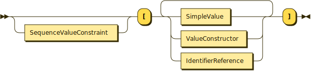
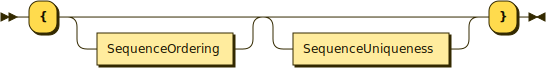
Example
module example is import ex @ex:thing = [ "yes" "no" "maybe" ] end
Example
module example is import ex @ex:thing = {unique}[ "yes" "no" "maybe" ] end
2.4.5. Defining Data Types
A datatype definition introduces a new simple data type by restriction of some existing base type.
DataTypeDef
::= "datatype" Identifier "<-" DataTypeBase AnnotationOnlyBody?

DataTypeBase
::= IdentifierReference | BuiltinSimpleType

Listing 13 shows the type restriction operator, <-, defining a new type named name as a restriction on
the existing XML Schema data type xsd:string.
module example is import ex datatype Name <- string end
While such a type is useful for conveying semantic meaning with types it doesn't provide any actual restriction on the value space of the type. This is accomplished by using a subset of the facets described in XML Schema part 2 to specify constraints on the new type. For example, in listing 14 we now see that the Name type is a string whose length is between 5 and 25 characters only.
module example is import ex datatype Name <- string is @xsd:minLength = 5 @xsd:maxLength = 25 end end
From OWL 2 Web Ontology Language Quick Reference Guide11:
| Facet | Value | Applicable Datatypes | Explanation |
|---|---|---|---|
xsd:minInclusive, xsd:maxInclusive, xsd:minExclusive, xsd:maxExclusive |
literal in the corresponding datatype | Numbers, Time Instants | Restricts the value-space to greater than (equal to) or lesser than (equal to) a value |
xsd:minLength, xsd:maxLength, xsd:length |
Non-negative integer | Strings, Binary Data, IRIs | Restricts the value-space based on the lengths of the literals |
xsd:pattern |
xsd:string literal as a regular expression |
Strings, IRIs | Restricts the value space to literals that match the regular expression |
rdf:langRange |
xsd:string literal as a regular expression |
rdf:PlainLiteral |
Restricts the value space to literals with language tags that match the regular expression |
2.4.6. The Built-in Simple Types
In the preceding sections we introduced the set of built-in simple types: string, double, decimal, integer, boolean, and
iri. These are keywords in SDML and have specific rules applied when parsing. Each keyword is translated into a
qualified identifier where the module name is the reserved name sdml. This set of standard library types have an
underlying RDF/OWL equivalence relationship to a subset of the XML Schema datatypes, all shown in table
4.
BuiltinSimpleType
::= "string" | "double" | "decimal" | "integer" | "boolean" | "iri"

| Type Keyword | Qualified Identifier | Equivalent XML Schema Datatype |
|---|---|---|
boolean |
sdml:boolean |
xsd:boolean |
decimal |
sdml:decimal |
xsd:decimal |
double |
sdml:double |
xsd:double |
integer |
sdml:integer |
xsd:integer |
iri |
sdml:iri |
xsd:anyURI |
string |
sdml:string |
xsd:string or rdf:langString |
2.5. Sequence Types
When a structure member has a cardinality other than 1..1 it has to be represented by a sequence type. SDML bases it's
sequence types on cardinality constraints rather than the direct specification of a collection type. This allows you to
specify the semantic intent of a member rather than picking a type and then worrying about the mapping of that to a
programming language types.
The current SDML cardinality constraints are:
- Ordering
- determines whether the sequence maintains the order of it's elements; one of
orderedorunordered(default). - Uniqueness
- determines whether the sequence allows duplicate elements or not; one of
orderedornonunique(default).
Table 5 shows how these constraints are combined to determine the corresponding SDML sequence type. See also section 8.3.7 which describes the standard library operations on sequence types.
| Ordering | Uniqueness | Logical Type | Example Specification |
|---|---|---|---|
unordered |
nonunique |
Bag (default) |
{0..} |
ordered |
nonunique |
List |
{ordered 0..} |
| n/a | n/a | Maybe |
{0..1} |
ordered |
unique |
OrderedSet |
{ordered unique 0..} |
unordered |
unique |
Set |
{unique 0..} |
Note, any ordering or uniqueness constraint on the cardinality 0..1 is effectively ignored.
A dictionary or map structure can be described in SDML as a sequence of mapping values (see section 9.4.1).
Specifically the sequence type {unique 0..} (string -> string) is mapping from string values to other strings where each mapping
is unique, and for mapping types only the keys are considered in comparisons. The type {0..} (string -> string) does not
enforce uniqueness and thus is a multi-map.
2.6. Annotations
Annotations allow for the assertion of facts attached to model elements that go beyond what is possible to describe in the core syntax. Annotations are available in two forms, annotation properties, and constraints.
Annotation
::= AnnotationProperty | Constraint

A number of model elements described in the following sections have a body that may only contain annotations and so the following common production is used.
AnnotationOnlyBody
::= "is" Annotation+ "end"

2.6.1. Annotation Properties
Annotation Properties are an extension mechanism that interacts directly with the underlying RDF representation of the subject model element. While these may look like Java annotations, Python decorators, or Rust attributes it is more powerful in that it can express arbitrary statements about the model element. An SDML annotation starts with the symbol "@" and then has an identifier that resolves to an OWL annotation property (see section 2.6.3 for the detailed rules), and a value for the corresponding property range.
AnnotationProperty
::= "@" IdentiferReference "=" Value

Example:
The following example demonstrates a common annotation property attached to a module.
module example is import skos @skos:note = "This is an example annotation" end
For descriptive annotation properties it is valuable to use the language specific string format so allow for localization of labels and descriptions. The following example shows a simple label specified in multiple languages.
Example:
module example is import skos @skos:prefLabel = [ "example"@en "exemple"@fr "例子"@zh-CH ] end
A model element may have any number of annotation properties, especially the module itself which often includes annotations for the domain itself.
Example:
module example is import [ dc skos xml ] @skos:prefLabel = "Example Module"@en @dc:description = "This is an example module, with two annotations."@en @dc:created = @xsd:date("2023-08-17 Thu") @dc:creator = <http://github.com/johnstonskj> @dc:license = <https://opensource.org/license/mit/> end
From OWL Web Ontology Language Reference, Appendix E: Rules of Thumb for OWL DL ontologies:
If a property
ais used where an annotation property is expected then it should either be one of the built in annotation properties (owl:versionInfo,rdfs:label,rdfs:comment,rdfs:seeAlso, andrdfs:isDefinedBy) or there should be a triple:
a rdf:type owl:AnnotationProperty
2.6.2. Constraints
This section will only briefly introduce constraints as section 3 provides a detailed description. The first example, in listing 18, provides an informal constraint in that it is simply a string which is useful to readers but cannot be verified.
module rental is assert name_form = "All definition names MUST start with 'Rental'" end
While informal constraints are not validated in any way, given the ambiguities of human language a controlled language is a useful alternative.
A formal constraint on the other hand may be verified, but takes more work to structure correctly. The example in listing 19 example above by methodically checking every definition and any members therein.
module rental is assert name_form is forall d in definitions(self) ( suffix(name(d) "Rental") ) end end
2.6.3. Defining RDF Classes and Properties
In general only properties that have an RDF type of owl:AnnotationProperty, or are sub-properties of such a property,
may appear as annotations. This maintains the assertion that they are annotations of their subject and allows the use of
a range of pre-defined annotation properties from RDF, RDF Schema, OWL, and the Dublin Core Metadata Initiative
(DCMI)12.
For example the annotation property rdfs:comment is defined in the following manner allowing it's use on any resource
and with a value that may be any literal.
rdfs:comment rdf:type rdf:Property, owl:AnnotationProperty ; rdfs:isDefinedBy <http://www.w3.org/2000/01/rdf-schema#> ; rdfs:label "comment" ; rdfs:comment "A description of the subject resource." ; rdfs:domain rdfs:Resource ; rdfs:range rdfs:Literal .
To allow the standard library to define SDML equivalents of such properties it is necessary to provide a mechanism to
use non-annotation properties such as rdf:type, rdfs:domain, and rdfs:range as demonstrated in the example above. To
allow this, if a model element has the property rdf:type then the transformation from that element to RDF does not use
any of the transformations described here but an explicit mapping from only the provided properties.
Rewriting the RDF from listing 20 into SDML results in the definition in listing 21.
module rdfs is ;; a lot of things elided. structure comment is @rdf:type = [ rdf:Property owl:AnnotationProperty ] @isDefinedBy = <http://www.w3.org/2000/01/rdf-schema#> @label = "comment" @comment = "A description of the subject resource." @domain = Resource @range = Literal end end
The following are commonly used RDF and OWL definition properties.
rdf:type–rdfs:domainandrdfs:range–rdfs:subClassOfandrdfs:subPropertyOf–owl:equivalentClassandowl:equivalentProperty–owl:inverseOf–owl:disjointWith–owl:FunctionalProperty,owl:InverseFunctionalProperty,owl:SymmetricPropertyandowl:TransitiveProperty–
2.7. Structured Types
Structured types fall into two primary categories, Product types and Sum types. Product types have named and typed
Members and in SDML these are structures, entities and events. Sum types on the other hand have Variants and in SDML
these are enumerations and disjoint unions. In the surface syntax product type bodies are introduced by the keyword is
whereas sum type bodies are introduced by the keyword of.
2.7.1. Members
Product type members fall into the following categories.
- Identity
- A particular kind of member only available on entities, and required by them, to name the identifier for that entity type.
- By-Value
- A reference to a value type, i.e. Enumeration, Event, or Structure. Such a member may indicate the cardinality of the target.
- By-Reference
- A reference to an Entity type. Such a member may indicate the cardinality of the target as well as the name of the inverse member on the target type.
IdentityMember
::= "identity" Identifier
( PropertyMember | ( TypeExpression AnnotationOnlyBody? ) )

MemberByValue
::= Identifier
( PropertyMember | ( TypeExpressionTo AnnotationOnlyBody? ) )

MemberByReference
::= "ref" Identifier
( PropertyMember | ( InverseName? TypeExpressionTo AnnotationOnlyBody? ) )

InverseName
::= "(" Identifier ")"

PropertyMember
::= "in" IdentifierReference

In the following example we see two members, default and name. The former is actually a reference to a property role,
specifically the role default within the property definition AccountId in module account. The latter is a defined member
with the name name and the type string and default cardinality.
Example:
module example is import account structure Account is default in account:AccountId name -> string end end
Member Types
For identity, by-value, and by-reference members the general syntax uses the type reference operator, name -> type, with
additional keywords and cardinality included as follows.
| Kind | Keyword | To-Cardinality | Target Types |
|---|---|---|---|
| Identity | identity |
No | Enumeration, Event, Structure, or Union |
| By-Value | Yes | Enumeration, Event, Structure, or Union | |
| By-Reference | ref |
Yes | Entity |
Additionally, to allow for the capture of member names before the elaboration of all types the language allows for the
target type to be replaced with the keyword unknown. This marks the member, and by extension it's owning type, as
incomplete. Note the grammar allows ASCII and Unicode representations of the has type operator.
TypeExpression
::= HasType TypeReference
TypeExpressionTo
::= HasType Cardinality? TypeReference
HasType
::= "->" | "→" | "↦"
TypeReference
::= UnknownType | IdentifierReference | BuiltinSimpleType | MappingType
UnknownType
::= "unknown"


A mapping type denotes a functional relationship between the domain (left-hand type) and range (right-hand type).
MappingType
::= "(" TypeReference HasType TypeReference ")"

The syntax for mapping values is described in section 9.4.1.
Member Cardinality
The cardinality of a member is specified as a range operation with a minimum and maximum number of occurrences specified. Additionally cardinality constraints determine the ordering and uniqueness of the collection of member values in a sequence type (see section 2.5).
- The form
{1..3}specifies a cardinality of 1 to 3 inclusive, or \([1,3]\) in interval notation. - The form
{1..}specifies a minimum of 1 occurrences an unbounded maximum, or \([1,\infty]\) in interval notation. - The form
{1}specifies that 1 is both the minimum and maximum value, or \([1,1]\) in interval notation, commonly termed a degenerate interval.
Cardinality
::= "{" SequenceOrdering? SequenceUniqueness? CardinalityInner "}"
CardinalityInner
::= Unsigned CardinalityRange?
CardinalityRange
::= ".." Unsigned?

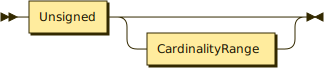

SequenceOrdering
::= ( "ordered" | "unordered" )
SequenceUniqueness
::= ( "unique" | "nonunique" )


2.7.2. Variants
Sum type variants fall into the following categories.
- Value Variant
- A member within an enumeration that specifies a numeric value for each member rather than a type.
- Type Variant
- A type reference that is a unique variant of a disjoint union.
The details of the two variant types are in the sections on enumerations and disjoint unions following.
2.7.3. Structures
A structure is a product type that is composed of named and typed members. A structure is therefore akin to a record type, a table in data modeling, or a class in object modeling.
StructureDef
::= "structure" Identifier StructureBody?

Example:
As only the keyword structure and the identifier are required, the listing 23 is therefore a
valid model.
module example is structure Length end
The structure Length in listing 23 is valid but considered incomplete. Adding a body to the
structure, between is and end, makes it complete even if it has no actual members. In listing
24 the structure Length is now complete.
StructureBody
::= "is" Annotation* ( MemberByValue | StructureGroup )* "end"

Example:
module example is structure Length is @skos:prefLabel = "Length"@en end end
Example:
Listing 25 adds the members value and unit and their corresponding types.
module example is structure Length is @skos:prefLabel = "Length"@en value -> Decimal unit -> DistanceUnit end end
In listing 26 we see a more complex structure with both members and groups.
StructureGroup
::= "group" Annotation* MemberByValue+ "end"

Example:
module example is structure Account is @skos:prefLabel = "Customer Account"@en group @skos:prefLabel = "Metadata" created -> xsd:dateTime lastModified -> xsd:dateTime end group @skos:prefLabel = "Customer Information" ref customer -> {1..1} Customer end end end
2.7.4. Entities
EntityDef
::= "entity" Identifier EntityBody?

Example:
module example is entity Person end
The entity Person in listing 27 is valid but incomplete.
EntityBody
::= "is"
Annotation* IdentityMember ( EntityMember | EntityGroup )*
"end"

EntityGroup
::= "group" Annotation* EntityMember+ "end"

EntityMember
::= MemberByValue | MemberByReference

Example:
module example is entity Person is identity id -> PersonId end end
The identity member is a required part of the entity definition, it not only tells us what type represents the unique
identifier for this entity but is also used in ref members and event sources (see section 2.7.5). In the
case of a ref member the target entity, in our example Person is not included in the entity's structure, it's identifier
type, PersonId is instead.
module example is entity Person is identity id -> PersonId ref emergency_contact (emergency_contact_for) -> {0..2} Person is @dc:description = "Emergency contact person" end end end
2.7.5. Entity Events
Entity Events, or simply Events, model notifications generated by an entity most often representing a state change in the entity.
As such a source reference denotes the entity which generates this event. Any expansion of the event structure must include the
identifiers of the source entity.
EventDef
::= "event" Identifier
"source" IdentifierReference
StructureBody?

Example:
module example is event PersonNameChanged source Person end
With the expansion of the source entity the event definition above is logically equivalent to the following structure.
module example is structure PersonNameChanged is id -> PersonId is @sdml:identifies = Person end end end
As we have seen before, the event PersonNameChanged in listing 30 is valid but incomplete.
Example:
The following is a valid and complete event definition with two structure members.
module example is event PersonNameChanged source Person is fromValue -> Name toValue -> Name end end
2.7.6. Enumerations
An enumeration is a numeric type that expressly names the values it may take. This is a restricted form of the enum type
found in most languages as not only must all names be unique but all names must specify a value and all values must also
be unique. Note also that the keyword of and not is starts an enumeration body.
EnumDef
::= "enum" Identifier EnumBody?

Example:
module example is enum DistanceUnit end
The enumeration DistanceUnit in 32 is valid but incomplete. Completion of the enumeration requires
the addition of a body with enumeration variants.
EnumBody
::= "of" Annotation* ValueVariant+ "end"

ValueVariant
::= Identifier "=" Unsigned AnnotationOnlyBody?

Example:
The following demonstrates a valid and complete enumeration.
module example is enum DistanceUnit of Meter = 1 Foot = 2 end end
2.7.7. Disjoint Unions
A disjoint, or discriminated, union is a mechanism to allow for a selection of disjoint types to be treated as a single
type. As such the variants of the union are simply type references, although they do allow annotations. Note also that
the keyword of and not is starts a union body.
UnionDef
::= "union" Identifier UnionBody?

Example:
module example is union VehicleClass end
The union VehicleClass in 34 is valid but incomplete. Completion of the union requires the addition
of a body with type variants.
UnionBody
::= "of"
Annotation* TypeVariant+
"end"

TypeVariant
::= IdentifierReference TypeVariantRename? AnnotationOnlyBody?

TypeVariantRename
::= "as" Identifier

Example:
The following is a valid and complete example with three type variants and one that is renamed from Van to LittleTruck.
module example is union VehicleClass of Car Truck Van as LittleTruck end end
2.8. Property Definitions
SDML provides for a data dictionary, or element-first, style of model capture where key properties of the domain are defined and annotated in a stand-alone form. These are often key identifiers and other shared properties
PropertyDef
::= "property" Identifier PropertyBody?

Example:
module example is property account_id end
The property account_id in 36 is valid but incomplete. Completion of the property requires the
addition of a body with roles defined.
PropertyBody
::= "is" Annotation* PropertyRole+ "end"
PropertyRole
::= IdentityRole | RoleByValue | RoleByReference


Note that the syntax of role definitions is a subset of the syntax for members (see section 2.7.1). In each case the choice between a property reference and a member definition is removed and only the definition part remains.
IdentityRole
::= "identity" Identifier TypeExpression AnnotationOnlyBody?

RoleByValue
::= Identifier TypeExpressionTo AnnotationOnlyBody?

RoleByReference
::= "ref" Identifier InverseName? TypeExpressionTo AnnotationOnlyBody?

Example:
The following is a valid and complete example.
module example is property accountId is identity identifier -> {1} account:AccountId is @skos:definition = "The identifier that denotes that this entity has a one-to-one relationship with a customer account."@en end ref reference -> {1} account:AccountId is @skos:definition = "Refers to an entity that has a one-to-one relationship with a customer account."@en end end end
2.9. Common Questions
2.9.1. Why are Enumerations and Unions distinct
TBD
2.9.2. How to model Polymorphism
The term polymorphism is, in itself, polymorphic; the intent in software to create a structure that may be of more than one type is useful enough that it has been invented a number of times.
In programming language theory and type theory, polymorphism is the provision of a single interface to entities of different types or the use of a single symbol to represent multiple different types. — Wikipedia13
- Pointers, and especially the C
void* - Operator overloading or dispatching, including methods and multi-methods
- Discriminated Unions, also known as disjoint unions, variant records (Pascal family), tagged types (Ada)
- Inheritance, of both interface and implementation
- Interface, or protocol, implementation
As SDML does not support pointers, inheritance, or interface definitions, polymorphism is provided only via union types.
2.9.3. When to use Property Definitions
module example is import [ skos xsd ] datatype AccountId <- xsd:long datatype ExternalAccountId <- uri structure ChildAccountId is parent -> AccountId child -> AccountId end union AllAccountIds of AccountId, ExternalAccountId, ChildAccountId end end
module example is import [ skos xsd ] property account_id is internal -> {1} xsd:long is @skos:definition = "This is our internal representation."@en end external -> {1} url is @skos:definition = "This is our external representation for customers."@en end child -> {2} xsd:long end entity Account is identity account_id as internal end end
2.9.4. How to model Variability
Discuss role of unions in modeling variability
2.10. Complete Surface Syntax Grammar
The grammar of the surface syntax is presented in Extended Backus–Naur form (EBNF)14. The addition of a character literal
range operation .. reduces the number of single character alternatives for clarity. There are also a set of pre-defined
terminals such as ASCII_DIGIT, ASCII_HEX_DIGIT, UC_LETTER_UPPER, and UC_LETTER_LOWER used to simplify character ranges.
While there are many variations15 of EBNF in existence, including multiple standardized forms, the specific form
used here follows the notation described the W3C Extensible Markup Language (XML) 1.0 (Fifth Edition), section 6
Notation.
Module
::= "module" Identifier ModuleBase? ModuleBody
ModuleBase
::= "base" IriReference
ModuleBody
::= "is"
ImportStatement* Annotation* Definition*
"end"
MemberImport
::= QualifiedIdentifier
ModuleImport
::= Identifer
Import
::= MemberImport | ModuleImport
ImportStatement
::= "import" ( Import | "[" Import+ "]" )
Annotation
::= AnnotationProperty | Constraint
AnnotationProperty
::= "@" IdentiferReference "=" Value
Definition
::= DataTypeDef
| EntityDef
| EnumDef
| EvqentDef
| StructureDef
| UnionDef
| PropertyDef
DataTypeDef
::= "datatype" Identifier TypeRestriction DataTypeBase AnnotationOnlyBody?
TypeRestriction
::= "<-" | "←"
DataTypeBase
::= IdentifierReference | BuiltinSimpleType
AnnotationOnlyBody
::= "is" Annotation+ "end"
EntityDef
::= "entity" Identifier EntityBody?
EntityBody
::= "is"
Annotation* IdentityMember ( EntityMember | EntityGroup )*
"end"
EntityGroup
::= "group" Annotation* EntityMember+ "end"
EntityMember
::= MemberByValue | MemberByReference
EnumDef
::= "enum" Identifier EnumBody?
EnumBody
::= "of" Annotation* ValueVariant+ "end"
ValueVariant
::= Identifier "=" Unsigned AnnotationOnlyBody?
EventDef
::= "event" Identifier
"source" IdentifierReference
StructureBody?
StructureDef
::= "structure" Identifier StructureBody?
StructureBody
::= "is" Annotation* ( MemberByValue | StructureGroup )* "end"
StructureGroup
::= "group" Annotation* MemberByValue+ "end"
UnionDef
::= "union" Identifier UnionBody?
UnionBody
::= "of"
Annotation* TypeVariant+
"end"
TypeVariant
::= IdentifierReference TypeVariantRename? AnnotationOnlyBody?
TypeVariantRename
::= "as" Identifier
PropertyDef
::= "property" Identifier PropertyBody?
PropertyBody
::= "is" Annotation* PropertyRole+ "end"
PropertyRole
::= IdentityRole | RoleByValue | RoleByReference
IdentityRole
::= "identity" Identifier TypeExpression AnnotationOnlyBody?
RoleByValue
::= Identifier TypeExpressionTo AnnotationOnlyBody?
RoleByReference
::= "ref" Identifier InverseName? TypeExpressionTo AnnotationOnlyBody?
PropertyMember
::= "in" IdentifierReference
IdentityMember
::= "identity" Identifier
( PropertyMember | ( TypeExpression AnnotationOnlyBody? ) )
MemberByValue
::= Identifier
( PropertyMember | ( TypeExpressionTo AnnotationOnlyBody? ) )
MemberByReference
::= "ref" Identifier
( PropertyMember | ( InverseName? TypeExpressionTo AnnotationOnlyBody? ) )
TypeExpression
::= HasType TypeReference
TypeExpressionTo
::= HasType Cardinality? TypeReference
HasType
::= "->" | "→" | "↦"
TypeReference
::= UnknownType | IdentifierReference | BuiltinSimpleType | MappingType
UnknownType
::= "unknown"
MappingType
::= "(" TypeReference HasType TypeReference ")"
Cardinality
::= "{" SequenceOrdering? SequenceUniqueness? CardinalityInner "}"
CardinalityInner
::= Unsigned CardinalityRange?
CardinalityRange
::= ".." Unsigned?
SequenceOrdering
::= ( "ordered" | "unordered" )
SequenceUniqueness
::= ( "unique" | "nonunique" )
InverseName
::= "(" Identifier ")"
Value
::= SimpleValue
| ValueConstructor
| IdentifierReference
| MappingValue
| SequenceOfValues
BuiltinSimpleType
::= "string" | "double" | "decimal" | "integer" | "boolean" | "iri"
SimpleValue
::= String | Double | Decimal | Integer | Boolean | IriReference
Boolean
::= Tautology | Contradiction
Tautology
::= ( "true" | "⊤" )
Contradiction
::= ( "false" | "⊥" )
NumericSign
::= [+-]
Zero
::= [0]
NonZero
::= [1-9]
Unsigned
::= Zero | NonZero ASCII_DIGIT*
Integer
::= NumericSign? Unsigned
Decimal
::= Integer "." ASCII_DIGIT+
ExponentChar
::= [eE]
Double
::= Decimal ExponentChar NumericSign? Integer
HexPair
::= ASCII_HEX_DIGIT ASCII_HEX_DIGIT
Escape
::= "\\" ( CharacterEscape | UnicodeEscape )
CharacterEscape
::= [\"\\/abefnrtv]
UnicodeEscape
::= "u{" HexPair ( HexPair ( HexPair )? )? "}"
NotAllowed
::= [^\"\#x00-#x08#x0B-#x1F#x7F]
QuotedString
::= '"' ( Escape | NotAllowed )* '"'
LanguageTag
::= "@"
LanguageTagPrimary
LanguageTagExtended?
LanguageTagScript?
LanguageTagRegion?
LanguageTagPrimary
::= ASCII_LETTER_LOWER ASCII_LETTER_LOWER ASCII_LETTER_LOWER?
LanguageTagExtended
::= "-"
ASCII_LETTER_UPPER ASCII_LETTER_UPPER ASCII_LETTER_UPPER
LanguageTagScript
::= "-"
ASCII_LETTER_UPPER ASCII_LETTER_LOWER
ASCII_LETTER_LOWER ASCII_LETTER_LOWER
LanguageTagRegion
::= "-"
( ( ASCII_LETTER_UPPER ASCII_LETTER_UPPER )
| ( ASCII_DIGIT ASCII_DIGIT ASCII_DIGIT ) )
String
::= QuotedString LanguageTag?
IriReference
::=
"<"
( [^<>\"{}|^`\#x00-#x20] | UnicodeEscape )*
">"
ValueConstructor
::= IdentifierReference "(" SimpleValue ")"
MappingValue
::= SimpleValue HasType Value
SequenceOfValues
::= SequenceValueConstraint? "["
( SimpleValue | ValueConstructor | IdentifierReference )+
"]"
SequenceValueConstraint
::= "{"
( SequenceOrdering? SequenceUniqueness? )
"}"
IdentifierInitial
::= UC_LETTER_UPPER | UC_LETTER_LOWER
IdentifierChar
::= IdentifierInitial | UC_NUMBER_DECIMAL
Identifier
::= IdentifierInitial IdentifierChar* ( "_" IdentifierChar+ )*
QualifiedIdentifier
::= Identifier ":" Identifier
IdentifierReference
::= QualifiedIdentifier | Identifier
LineComment
::= ";" [^\r\n]*
Whitespace
::= [^\f\n\r\t\v#x20#xa0#x1680#x2000#x200a#x2028#x2029#x202f#x205f#x3000#xfeff]
2.10.1. The Embedded Constraint Language
Given that the formal constraint language component of SDML is likely to be used less frequently and the grammar is fairly long we have made it a separate section.
Constraint
::= "assert" Identifier ( InformalConstraint | FormalConstraint )
InformalConstraint
::= "=" QuotedString ControlledLanguageTag?
ControlledLanguageTag
::= "@" LanguageTagPrimary ControlledLanguageScheme?
ControlledLanguageScheme
::= "-"
ASCII_LETTER ASCII_LETTER ASCII_LETTER
ASCII_LETTER? ASCII_LETTER? ASCII_LETTER?
ASCII_LETTER? ASCII_LETTER? ASCII_LETTER?
FormalConstraint
::= "is"
ConstraintEnvironment? ConstraintSentence
"end"
ConstraintSentence
::= SimpleSentence
| BooleanSentence
| QuantifiedSentence
| "(" ConstraintSentence ")"
SimpleSentence
::= Atomic | Equation | Inequation
Atomic
::= Term "(" Term* ")"
Equation
::= Term "=" Term
Inequation
::= Term InequationRelation Term
InequationRelation
::= ( '/=' | '≠' | '<' | '>' | '<=' | '≤' | '>=' | '≥' )
BooleanSentence
::= Negation
| ConstraintSentence
(
Conjunction | Disjunction | ExclusiveDisjunction |
Implication | Biconditional
)
Negation
::= ( "not" | "¬" ) ConstraintSentence
Conjunction
::= ( "and" | "∧" ) ConstraintSentence
Disjunction
::= ( "or" | "∨" ) ConstraintSentence
ExclusiveDisjunction
::= ( "xor" | "⊻" ) ConstraintSentence
Implication
::= ( "implies" | "⇒" ) ConstraintSentence
Biconditional
::= ( "iff" | "⇔" ) ConstraintSentence
QuantifiedSentence
::= QuantifiedVariableBinding+ QuantifiedBody
QuantifiedVariableBinding
::= ( Universal | Existential ) QuantifierBoundNames
Universal
::= "forall" | "∀"
Existential
::= "exists" | "∃"
QuantifierBoundNames
::= "self" | Identifer ( "," Identifer )* IteratorSource
IteratorSource
::= TypeIterator | SequenceIterator
TypeIterator
::= HasType ( "Self" | IdentifierReference )
SequenceIterator
::= ( "in" | "∈" ) ( FunctionComposition | Identifier | SequenceBuilder )
QuantifiedBody
::= "(" ConstraintSentence ")"
Term
::= FunctionComposition
| Identifier
| QualifiedIdentifier
| PredicateValue
| FunctionalTerm
| SequenceBuilder
FunctionComposition
::= ( "self" | Identifier ) ( "." Identifier )+
PredicateValue
::= SimpleValue | SequenceOfPredicateValues
SequenceOfPredicateValues
::= "∅"
| SequenceValueConstraint?
"[" ( SimpleValue | IdentifierReference )* "]"
FunctionalTerm
::= Term "(" Term* ")"
2.10.2. Constraint Environment Definitions
ConstraintEnvironment
::= EnvironmentDef+ "in"
EnvironmentDef
::= "def" Identifier ( FunctionDef | ConstantDef )
FunctionDef
::= FunctionSignature ( ":=" | "≔" ) ConstraintSentence
FunctionSignature
::= "(" FunctionParameter+ ")" HasType FunctionType
FunctionParameter
::= Identifier HasType FunctionType
FunctionType
::= FunctionCardinality? FunctionTypeRef
FunctionCardinality
::= "{"
SequenceOrdering? SequenceUniqueness? ( Wildcard | CardinalityInner )
"}"
FunctionTypeRef
::= Wildcard | IdentiferReference | BuiltinSimpleType | MappingType
Wildcard
::= "_"
ConstantDef
::= ( ":=" | "≔" ) ( PredicateValue | ConstraintSentence )
2.10.3. Sequence Builders
SequenceBuilder
::= "{"
( VariableNameSet | MappingVariable )
"|"
VariableBinding+ ConstraintSentence
"}"
VariableNameSet
::= Identifier+
MappingVariable
::= "(" Identifier HasType Identifier ")"
VariableBinding
::= ( Universal | Existential ) QuantifierBinding ","
3. Capturing Model Constraints
In developing any data, domain, or information model there are certain constraints between model elements that are either difficult to represent in the model language itself. This is particularly true of visual languages or those with a visual representation. For example, in UML it is not possible to define cross-attribute constraints (if this attribute is true, that attribute must be false), or setting cardinality on transitive associations. To address this UML uses Object Constraint Language16, 17, and similar languages have been proposed for parametric modeling languages.
SDML allows constraints to be added to any model element where annotations are also allowed. Constraints are named, and MAY be either informally, or formally specified.
Constraint
::= "assert" Identifier ( InformalConstraint | FormalConstraint )

Informal constraints may be simple free-form strings, these are a common place to start even if you intend to make a formal version later. An example informal constraint is shown in listing 40. However, they may also be written using controlled natural languages for an additional level of specificity.
module example is assert must_have_preferred_label = "All definitions in this module MUST have an annotation providing a skos:prefLabel value." end
3.1. Informal Constraints
Informal constraints, much like regular string values, have an optional language specifier. However, unlike regular strings this specifier has a more limited range as it's purpose is to identify a controlled natural language used for specification.
InformalConstraint
::= "=" QuotedString ControlledLanguageTag?

The controlled language tag only includes the primary language component of a regular SDML string but adds a scheme identifier.
ControlledLanguageTag
::= "@" LanguageTagPrimary ControlledLanguageScheme?
ControlledLanguageScheme
::= "-"
ASCII_LETTER ASCII_LETTER ASCII_LETTER
ASCII_LETTER? ASCII_LETTER? ASCII_LETTER?
ASCII_LETTER? ASCII_LETTER? ASCII_LETTER?


module example is assert must_have_preferred_label = "..."@en end
For example, Common Logic Controlled English18 (or Attempto Controlled English19) are well-known controlled forms of English with formal structure and defined transformations into logical forms.
module example is assert must_have_preferred_label = "..."@en-CLCE end
While no registry exists for scheme identifiers, the following identifiers must be used for the schemes listed in table 7.
| Name | Identifier | Alternate | Formalism |
|---|---|---|---|
| Attempto Controlled English | ACE |
Attempto |
|
| Common Logic Controlled English | CLCE |
ISO Common Logic |
3.2. Formal Constraints
Formal constraints have their own embedded constraint language whose semantics are a subset of ISO Common Logic20. ISO Common Logic is most easily understood as an abstract language that allows for the interchange of logical expressions based in first-order predicate logic between systems using standardized representations (Common Logic Interchange Format (CLIF), Conceptual Graph Interchange Format (CGIF), and XML notation for Common Logic (XCL)).
FormalConstraint
::= "is"
ConstraintEnvironment? ConstraintSentence
"end"

Listing 43 is another informal constraint.
module tagged is datatype Tag <- string structure Target is tags -> {0..} Tag ;; plus more interesing things... end structure Thing is tags -> {0..} Tag inner -> Target is assert tag_subset = "All of target's tags must exist in my tags." end end end
Listing 44 is a formal version of listing 43 which iterates over the set
of tags on the type Target which is the type of the member inner which is aliased to self (self.tags) within the constraint body.
For each element in the sequence of tags an existential statement ensures there is an equal tag within the enclosing
structure's tag collection (self.container.tags).
module tagged is structure Thing is tags -> {0..} Tag inner -> Target is assert tag_subset is ∀ tag ∈ self.tags ( ∃ ptag ∈ self.container.tags ( ptag = tag ) ) end end end
Using the terminology of Common Logic a formal constraint consists of a constraint sentence which is evaluated in the
context of the model element the constraint is attached to. This contextual element is bound to the identifier self and
the type of self is bound to the identifier Self. Additionally, an optional environment allows for the definition of
temporary values and functions for use in the constraint sentence.
ConstraintSentence
::= SimpleSentence
| BooleanSentence
| QuantifiedSentence
| "(" ConstraintSentence ")"

3.2.1. Simple Sentences
SimpleSentence
::= Atomic | Equation | Inequation

In the case of an atomic sentence the first term is the name of a predicate and the remaining terms are arguments to the predicate invocation.
Atomic
::= Term "(" Term* ")"

An equation asserts the equality of it's left and right operand.
Equation
::= Term "=" Term

An inequation asserts the inequality of it's left and right operand according to some relation.
Inequation
::= Term InequationRelation Term
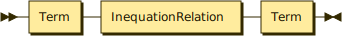
The following are the recognized inequality relations, note the inclusion of both ASCII and Unicode versions of some relation symbols.
InequationRelation
::= ( '/=' | '≠' | '<' | '>' | '<=' | '≤' | '>=' | '≥' )
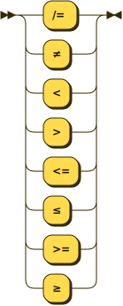
3.2.2. Boolean Sentences
Boolean sentences allow for the logical composition of sentences.
BooleanSentence
::= Negation
| ConstraintSentence
(
Conjunction | Disjunction | ExclusiveDisjunction |
Implication | Biconditional
)

The usual operators for negation, conjunction, disjunction, and exclusive disjunction are as expected.
Negation
::= ( "not" | "¬" ) ConstraintSentence
Conjunction
::= ( "and" | "∧" ) ConstraintSentence
Disjunction
::= ( "or" | "∨" ) ConstraintSentence
ExclusiveDisjunction
::= ( "xor" | "⊻" ) ConstraintSentence


Additionally, the logical relations of implication (or conditional) and biconditional are supported.
Implication
::= ( "implies" | "⇒" ) ConstraintSentence
Biconditional
::= ( "iff" | "⇔" ) ConstraintSentence


3.2.3. Quantified Sentences
SDML supports, as shown in listing 44 sentences that range over values using the universal (\(\forall\)) or existential (\(\exists\)) quantifiers. A quantified sentence is therefore a sentence body with a set of variables bound to these quantified values.
QuantifiedSentence
::= QuantifiedVariableBinding+ QuantifiedBody

Each variable binding specifies a quantifier, one or more names, and a source for variable values.
QuantifiedVariableBinding
::= ( Universal | Existential ) QuantifierBoundNames
Universal
::= "forall" | "∀"
Existential
::= "exists" | "∃"
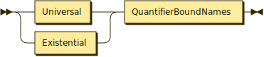


The special variable self is a shortcut for the set of values from the type of the element to which the constraint is
attached.
QuantifierBoundNames
::= "self"
| Identifer ( "," Identifer )* IteratorSource
IteratorSource
::= TypeIterator | SequenceIterator
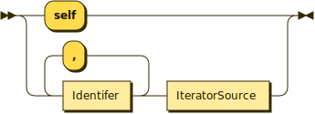
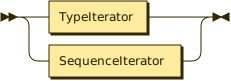
The special variable self can therefore be replaced by a non-special version self -> Self.
TypeIterator
::= HasType ( "Self" | IdentifierReference )

SequenceIterator
::= ( "in" | "∈" ) ( FunctionComposition | Identifier | SequenceBuilder )

QuantifiedBody
::= "(" ConstraintSentence ")"

More TBD
3.2.4. Terms
Term
::= FunctionComposition
| Identifier
| QualifiedIdentifier
| PredicateValue
| FunctionalTerm
| SequenceBuilder

FunctionComposition
::= ( "self" | Identifier ) ( "." Identifier )+
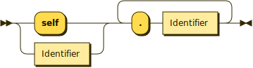
This notation is effectively syntactic sugar as it can be systematically transformed into the form above. The transformation rules are:
- The reserved words
selfandSelfmay only appear as the first element. - The list of names after the first are reversed and applied in turn as functions.
name.suffixbecomessuffix(name(_))
- The first element will become the first argument to the inner-most function.
name.suffixbecomessuffix(name(def))
- If the path ends in an argument list the arguments are added to the corresponding function call.
suffix(name(def)) + ("Rental")becomessuffix(name(def) "Rental")
Similarly the quantifier collection self.definitions becomes definitions(self).
PredicateValue
::= SimpleValue | SequenceOfPredicateValues
SequenceOfPredicateValues
::= "∅"
| SequenceValueConstraint?
"[" ( SimpleValue | IdentifierReference )* "]"

Note that the keyword ∅ denotes the empty set, or an empty sequence [] that is unique. Note that, like a normal sequence
of values, sequence constraints may be included.
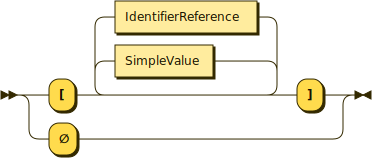
FunctionalTerm
::= Term "(" Term* ")"

3.2.5. Sequence Builders
A sequence builder uses set-builder notation to allow both specific selection of elements from sequences and values from types. A sequence builder expression describes a sequence as a selection of values from existing sequences filtered using predicates.
The simplest form of a builder expression is \(\bigl\{ x \mid P(x)\bigr\}\), where \(x\) is a variable and \(P\) is a predicate that
evaluates to true to select the value of \(x\). In natural language this expression read as follows "construct a sequence
of values of \(x\) such that the predicate \(f\) holds true for \(x\)".
However, this simple form tells us nothing about the domain of the variable \(x\), and in fact \(x\) is a free variable in the expression because of this lack of binding. The expression \(\bigl\{ x \mid \forall x \in X, P(x)\bigr\}\) binds the variable \(x\) to the elements of the sequence, or the values of the type, named \(X\). SDML does not allow free variables in sequence builders and so variable bindings must be present for all specified variables.
SequenceBuilder
::= "{"
( VariableNameSet | MappingVariable )
"|"
VariableBinding+ ConstraintSentence
"}"

The variables returned to the caller are specified before the | character and may either be a list of identifiers or a
single mapping of identifer to identifer.
VariableNameSet
::= Identifier+
MappingVariable
::= "(" Identifier HasType Identifier ")"
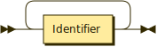
With a named variables set the builder returns a single value and a set of relations named for the variable identifiers.
\[t ≔ \bigl\{ x, y \mid x \in X, y \in Y, P(x) \land Q(y) \land x = y \bigr\}\]

On the other hand, a mapping variable returns a sequence of mapping values which may comprise a lookup table.
\[t ≔ \bigl\{ \left(d \rightarrow r\right) \mid \forall d \in D, \exists r \in R, id_{D}(d) = id_{R}(r) \bigr\}\]
VariableBinding
::= ( Universal | Existential ) QuantifierBinding ","

3.2.6. Library Functions
def predicate(Type) -> boolean def predicate(value -> Type) -> boolean
def relation(Type1, Type2) -> boolean def relation(value1 -> Type1, value2 -> Type2) -> boolean
def function(Type, ...) -> RType def function(value -> Type, ...) -> RType
Alternatively, listing 45 turns each sequence of tags into a set with the library function
into_set and can then perform a simple subset check with the library function is_subset.
module tagged is structure Thing is tags -> {0..} Tag inner -> Target is assert tag_subset is ∀ self ( is_subset( into_set(self.tags) into_set(self.container.tags)) ) end end end end
3.2.7. Constraint Environment
A formal constraint may start with an environment that includes one or more definitions that are then used in the constraint body. A definition introduces a new function or constant – a constant is effectively a 0-arity function – although the function body may be a value or a constraint sentence and not specify side-effects.
ConstraintEnvironment
::= EnvironmentDef+ "in"

EnvironmentDef
::= "def" Identifier ( FunctionDef | ConstantDef )

A defined function has a signature that describes it's domain, or parameters, and it's range, or return type.
FunctionDef
::= FunctionSignature ( ":=" | "≔" ) ConstraintSentence
FunctionSignature
::= "(" FunctionParameter+ ")" HasType FunctionType
FunctionParameter
::= Identifier HasType FunctionType
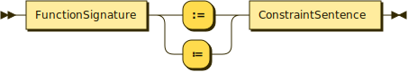


Function type specifications may use wildcard symbols to denote their application to undefined types.
FunctionType
::= FunctionCardinality? FunctionTypeRef
FunctionCardinality
::= "{"
SequenceOrdering? SequenceUniqueness? ( Wildcard | CardinalityInner )
"}"
FunctionTypeRef
::= Wildcard | IdentiferReference | BuiltinSimpleType | MappingType
Wildcard
::= "_"

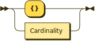
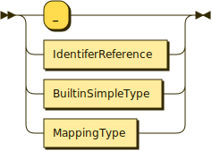
ConstantDef
::= ( ":=" | "≔" ) ( PredicateValue | ConstraintSentence )
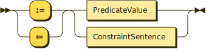
The example in listing 46 is an expansion of the informal example in listing
40. Here we check for the presence of the annotation on every top-level definition and then any
members of that definition. Note that this example also demonstrates the ability to create new predicates as in
has_pref_label which simplifies the body of the constraint.
module labelled is assert must_have_preferred_label is def has_pref_label(anns → {0..} Annotation) ≔ ∃ a ∈ anns ( a.name = skos:prefLabel ∧ ¬a.value.is_empty ) in has_pref_label(self.annotations) ∧ ∀ d ∈ self.definitions ( has_pref_label(d.annotations) ∧ Entity(d) ⇒ ∀ m ∈ d.flat_members ( has_pref_label(m.annotations) ) ∧ Enumeration(d) ⇒ ∀ m ∈ d.variants ( has_pref_label(m.annotations) ) ∧ Event(d) ⇒ ∀ m ∈ d.flat_members ( has_pref_label(m.annotations) ) ∧ Structure(d) ⇒ ∀ m ∈ d.flat_members ( has_pref_label(m.annotations) ) ∧ Union(d) ⇒ ∀ m ∈ d.variants ( has_pref_label(m.annotations) ) ∧ Property(d) ⇒ ∀ m ∈ d.roles ( has_pref_label(m.annotations) ) ) end end
4. The RDF Semantics
The W3C's Resource Description Framework (RDF) is a mature standard for the open development of vocabularies and knowledge representation. Key characteristics are that it has a fundamentally simple model, was designed with an Open World Assumption (OWA), and because of this it is inherently composable. RDF's core can be summarized with the following grammar, noting that at it's core it comprises a set of statements about things.
Graph = GraphId, Statement* GraphId = Uri Statement = Subject, Predicate, Object Subject = Named | Anonymous Predicate = Named Object = Subject | Literal Named = Uri
The Closed or Open World Assumption of a given model or other representation determines how it copes with, or even acknowledges new information beyond it's initial scope. For example, a database schema is a fixed structure determined by defining some scope which necessitates the ignoring of information outside the schema. Similarly, when object modeling in software development we start by defining a scope in the same manner. While both database schema and object models can change over time they may become unstable if new facts contradict the existing structure. RDF on the other hand was designed for the web and as such assumes that you cannot know what is known about anything as there are other datasets out there somewhere which may contain new information.
In the following example, expressed in the RDF Turtle syntax, there is a single statement whose subject is the value
:mytruck, with a predicate rdf:type, and object v:Truck. Expressed in English this reads as There exists a thing named
:mytruck whose type is Truck (from the v namespace).
:mytruck rdf:type v:Truck .
As the values above don't look like URIs the Turtle processor uses namespace mappings from prefix (before the ":") to URI to expand the values above into the following statement.
<https://example.org/p/simon#mytruck> <http://www.w3.org/1999/02/22-rdf-syntax-ns#type> <https://example.org/v#Truck> .
RDF, in a similar manner to SDML, defines an abstract syntax that captures the structure and semantics of RDF. This abstract syntax is then described in a set of concrete syntax specifications, or representations, including JSON, JSON-LD (JSON for Linked Data), NT (N-Tripes), N3 (Notation3), RDFa (RDF annotations in HTML), TriG (graph-oriented representation), Turtle (Terse RDF Triple Language), and XML. We use Turtle only in this document as it tends to be the easier to read.
A more complete example adds a number of statements about the common subject :mytruck.
:mytruck rdf:type v:Truck . :mytruck v:make "Dodge" . :mytruck v:model "Ram 3500" . :mytruck v:yearModel "2009"^^xsd:int .
I then consider adding the VIN21 to my statements above, in the following manner.
:mytruck v:hasVin "2G1FP22G522155049" .
However, I discover that my state Department of Transportation has an open dataset containing information recorded by VIN (just FYI, my state does not provide this).
dot:US_2G1FP22G522155049 rdf:type dot:VehicleRecord ; vso:engineDisplacement [ rdf:type gr:QuantitativeValueFloat ; gr:hasValueFloat "6.7"^^xsd:float ; gr:hasUnitOfMeasurement "LTR"^^xsd:string ] ; dot:engineConfiguration "Inline 6-cylinder" ; dot:engineName dbpedia:Cummins_B_Series_engine ; dot:engineManufacturer dbpedia:Cummins ; dot:fuelType dbpedia:GasolineDiesel_fuel .
Each VIN is an addressable resource and so I can assert that my resource
named :mytruck is the same as the resource dot:US_2G1FP22G522155049 which has the effect of adding any statements made
by the DOT to my record as well.
:mytruck owl:sameAs dot:US_2G1FP22G522155049 .
If I now query my resource I should find that my handful of statements above now looks like this:
:mytruck rdf:type v:Truck, dot:VehicleRecord ; owl:sameAs dot:US_2G1FP22G522155049 ; v:make "Dodge" ; v:model "Ram 3500" ; v:yearModel "2009"^^xsd:int ; vso:engineDisplacement [ rdf:type gr:QuantitativeValueFloat ; gr:hasValueFloat "6.7"^^xsd:float ; gr:hasUnitOfMeasurement "LTR"^^xsd:string ] ; dot:engineConfiguration "Inline 6-cylinder" ; dot:engineName dbpedia:Cummins_B_Series_engine ; dot:engineManufacturer dbpedia:Cummins ; dot:fuelType dbpedia:GasolineDiesel_fuel .
Why is this valuable? Because it allows us easily to add new statements about things at any future point. We don't have to worry about expanding a schema or changing table definitions we just add new statements and if their subjects are the same they will be combined. To manage the naming of things you will have noticed that names in the examples above have namespace prefixes and these namespaces correspond to definitions of vocabularies or ontologies. Figure 7 is an overview of the OWL Ontology for SDML. For clarity this figure elides the sub classes of Group and Member. Those classes in this diagram that are in a lighter color are abstract in that they exist only to be super-types of the classes actually referenced by other model elements. For more information on OWL itself, see OWL 2 Web Ontology Language Document Overview (Second Edition) and OWL References for Humans.

Figure 7: OWL Ontology
Figure 7 uses some notation elements from UML, although not a UML diagram itself. For a higher resolution version, click here.
- Open triangular arrow heads correspond to the RDF Schema
subClassOfrelationship. - Filled diamonds correspond to composite associations, or strong ownership.
- Open diamonds correspond to aggregate associations, or weak ownership.
4.1. What is an Ontology?
The term ontology was adopted from philosophy in around 1980 to describe logical theories developed to support work in artificial intelligence – for instance logical theories capturing the knowledge of the world of a robot. Since then the term has come to be widely used in information-driven science, journalism, industry, defense, intelligence, and government to describe computer artifacts created to support data retrieval, integration, reasoning and an expanding range of further goals.
An ontology is at its core a collection of general terms organized into a taxonomic hierarchy and associated with formal definitions and axioms. A simple example of how an ontology is used occurs where we have a number of heterogeneous data sources, each using different codes or labels to describe the same entities in reality – for instance proteins or weapons – and where we need to unify all the information in these different sources that pertains to each type of represented entity. Ontologies address this problem by providing a data source-neutral term for each type of entity which is then used to tag corresponding data entries in a consistent way. This enables enhanced retrieval and aggregation of the data. It also allows reasoning across aggregated data through appeal to the logical structure of the definitions and axioms of the corresponding ontology terms.
Such strategies have proved most successful where multiple ontologies covering different domains of entities are built in coordinated fashion to ensure interoperability and avoid overlap and redundancy. One method to achieve such coordination involves the application of a hub-and-spokes strategy, resting on a highly general domain-neutral hub, together with successive layers of spokes comprising domain ontologies built out of terms defined as specializations of terms contained in the hub. A top level ontology is an ontology designed to serve as hub in such an architecture.
4.2. SDML Ontology
Listing 47 is the ontology header that describes the Ontology itself. This shows the use of annotation properties from the Dublin Core DCMI Terms and the W3C Simple Knowledge Organization System (SKOS). Section 4.8 presents details on commonly used annotation properties found in the Ontology.
@prefix dc: <http://purl.org/dc/elements/1.1/> . @prefix owl: <http://www.w3.org/2002/07/owl#> . @prefix rdf: <http://www.w3.org/1999/02/22-rdf-syntax-ns#> . @prefix skos: <http://www.w3.org/2004/02/skos/core#> . @base <https://sdml.io/sdml-owl.ttl#> . <https://sdml.io/sdml-owl.ttl#> rdf:type owl:Ontology ; skos:prefLabel "Simple Domain Modeling Language"@en ; skos:altLabel "SDML"@en ; dc:hasVersion "0.1.10" ; dc:creator "Simon Johnston <johntonskj@gmail.com>" ; dc:license <https://github.com/johnstonskj/tree-sitter-sdml/blob/main/LICENSE> ; rdf:seeAlso <https://sdml.io/> .
4.3. Datatypes
4.4. Classes
All classes have an RDF type of owl:Class.
| Name | Sub-Class Of | Disjoint With |
|---|---|---|
:ByReferenceMember |
:Member |
:IdentityMember, :ByValueMember |
:ByValueMember |
:Member |
:IdentityMember, :ByReferenceMember |
:Cardinality |
None. | |
:Classifier |
:ModelElement |
|
:Datatype |
:Classifier, rdfs:Datatype |
:Enumeration , :Structure , :Union , :Unknown |
:Entity |
:Structure |
:Event |
:EntityGroup |
:Group |
:StructureGroup |
:Enumeration |
:Classifier |
:Datatype, :Structure, :Union, :Unknown |
:Event |
:Structure |
:Entity |
:Group |
:ModelElement |
|
:IdentityMember |
:Member |
:ByValueMember, :ByReferenceMember |
:Member |
:ModelElement |
|
:ModelElement |
None. | |
:Module |
:ModelElement |
|
:Property |
:Classifier |
:Datatype, :Enumeration, :Structure, :Unknown |
:RefRole |
:Role |
|
:Role |
None. | |
:Structure |
:Classifier |
:Datatype, :Enumeration, :Union, :Unknown |
:StructureGroup |
:Group |
:EntityGroup |
:Union |
:Classifier |
:Datatype, :Enumeration, :Structure, :Unknown |
:Unknown |
:Classifier |
:Datatype, :Enumeration, :Structure, :Union |
:Variant |
None. |
4.5. Object Properties
All object properties have an RDF type of owl:ObjectProperty.
| Domain | Name | Range | Inverse Of |
|---|---|---|---|
:ByReferenceMember ∪ :RefRole |
:sourceCardinality |
:Cardinality |
|
:ByReferenceMember ∪ :Role |
:targetCardinality |
:Cardinality |
|
:Classifier |
:isDefinedBy |
:Module |
:hasDefinition |
:Classifier |
:isTypeVariantOf |
:Union |
:hasTypeVariant |
:Datatype |
:baseDatatype |
:Datatype ∪ rdfs:Datatype |
|
:Entity |
:entityHasGroup |
:EntityGroup |
|
:Entity |
:emitsEvent |
:Event |
:eventSource |
:Entity |
:hasIdentityMember 1,2 |
:IdentityMember |
|
:Entity ∪ :EntityGroup |
:hasByReferenceMember 2 |
:ByReferenceMember |
|
:Entity ∪ :EntityGroup ∪ :Event ∪ :Structure ∪ :StructureGroup |
:hasByValueMember 2 |
:ByValueMember |
|
:Enumeration |
:hasVariant |
:Variant |
:isVariantOf |
:Event |
:eventSource |
:Entity |
:emitsEvent |
:Member |
:targetClassifier |
:Classifier |
|
:Member |
:isMemberOf |
:Structure ∪ :EntityGroup ∪ :StructureGroup |
:hasMember |
:Member |
:targetClassifier |
:Classifier ∪ :Unknown |
|
:Module |
:hasDefinition |
:Classifier |
:isDefinedBy |
:Structure |
:structureHasGroup |
:StructureGroup |
|
:Structure ∪ :EntityGroup ∪ :StructureGroup |
:hasMember |
:Member |
:isMemberOf |
:Union |
:hasTypeVariant |
:Classifier |
:isTypeVariantOf |
:Variant |
:isVariantOf |
:Enumeration |
:hasVariant |
Notes:
- This also has the rdf type
owl:FunctionalProperty. - These are also sub-properties of
:hasMember.
4.6. Datatype Properties
All datatype properties have an RDF type of owl:DatatypeProperty.
| Name | Sub Property Of | Domain | Range |
|---|---|---|---|
:hasValue |
rdf:value |
:Variant |
xsd:nonNegativeInteger |
:maxOccurs |
:Cardinality |
xsd:nonNegativeInteger |
|
:minOccurs |
:Cardinality |
xsd:nonNegativeInteger |
4.7. Annotation Properties
All annotation properties have an RDF type of owl:AnnotationProperty.
| Name | Domain | Range |
|---|---|---|
:defaultVariant |
:Enumeration |
xsd:NMTOKEN |
:deprecatedSince |
N/A | :versionString |
:flatten |
:Member |
Boolean |
:hasVersionIdType |
:Entity |
:Datatype ∪ :Structure |
:hasVersioningStyle |
:Entity |
VersioningStyle |
:introducedIn |
N/A | :versionString |
:rootEntity |
:Module |
:Entity |
The properties :deprecatedSince and :introducedIn both refer to a range type :versionString, this type is a string that
conforms to the semver form of major.minor.path where each is an integer.
:versionString rdf:type rdfs:Datatype ; owl:onDatatype xsd:string ; owl:withRestrictions ( [ xsd:pattern "(0|[1-9][0-9]*)(\.0|[1-9][0-9]*){,2}" ] ) .
The property :hasVersioningStyle, if present, denotes an entity as versioned and what form of versioning is to be applies.
The values for this property are:
- Immutable
- The user does not get to control the versioning, every mutation of the entity results in a new version and that version is therefore immutable and so version identifiers are maximally stable.
- Snapshot
- The user creates a new version explicitly with a specific operation. This implies that there are mutations of a specific version possible and so the version identifier is not necessarily stable.
- Mutable
- In this case the user has complete control over the versioning by mutation of the entity. In general this implies that there is some member of the entity that holds the version identifier. This results in an explicitly unstable identifier.
:VersioningStyle rdf:type rdfs:DataRange ; owl:oneOf ( "Immutable"^^xsd:string "Snapshot"^^xsd:string "Mutable"^^xsd:string ) .
The corresponding property :hasVersionIdType references the type used to represent a specific version. The default for this
is xsd:string.
4.8. Commonly Used Annotations
The following are annotation properties that are common in defining and using Ontologies and other forms of controlled vocabularies. These are all well-defined as well as commonly understood and so should be used before others in annotating a model.
| Name | Usage | Domain | Range |
|---|---|---|---|
:defaultVariant |
Denotes, if present, the default variant of an enumeration. | :ValueVariant |
xsd:NMTOKEN |
:deprecatedSince |
The specific version in which this model element was marked as deprecated. | N/A | :versionString |
:introducedIn |
The specific version this model element first appeared. | N/A | :versionString |
dc:conformsTo |
An established standard to which the described model element conforms. | N/A | xsd:AnyURI |
dc:contributor |
An entity responsible for making contributions to the model element. | N/A | xsd:string |
dc:creator |
An entity primarily responsible for making the model element. | N/A | xsd:string |
dc:license |
A legal document giving official permission to do something with the model element. | :Module |
xsd:AnyURI |
rdfs:seeAlso |
Used to indicate a resource that might provide additional information about the model element. | N/A | xsd:AnyURI |
skos:altLabel |
An alternative lexical label/name for the model element. | N/A | rdf:langString |
skos:definition |
A complete explanation of the intended meaning of the model element. | N/A | rdf:langString |
skos:hiddenLabel |
A lexical label/name for the element where it may be searchable but not commonly displayed. | N/A | rdf:langString |
skos:historyNote |
Describes significant changes to the meaning or the form of the model element. | N/A | rdf:langString |
skos:prefLabel |
The preferred lexical label/name of the model element. | N/A | rdf:langString |
5. Walk-Through Example
The following section walks through the process of model creation and iterative elaboration to add detail as domain experts provide more information. In our example we will build a domain model for a vehicle rental company.
5.1. Starting with Core Entities
So, as you might imagine we can start the model with some pretty obvious entities, but with no detail beyond their names. Listing 48 is this first-pass domain model.
module rentals is entity Vehicle entity Location entity Customer entity Booking end
The sdml tool can be used to generate a concept diagram, a high-level view of only the entities in the model and their
relationships. The following command-line will generate figure 8 from listing
48.
sdml draw --diagram concepts \
--output-format svg \
--output-file docs/rentals-concept-1.svg \
docs/rental-1.sdm

Figure 8: Rentals Concepts (First Pass)
5.2. Adding Relationships
Figure 49 is the second-pass at our model, adding relationships from the Booking entity to the
Customer, Location, and Vehicle entities. Adding a body to the Booking entity, between is … end, requires the entity
specify an identifier. To allow the addition of bookingCode without spending time on the details of it's type the
keyword unknown is used to defer the type until later.
Additionally, the vehicle relationship specifies a new cardinality overriding the usual 0.. with 0..1.
module rentals is entity Vehicle entity Location entity Customer entity Booking is identity bookingCode -> unknown ref vehicle -> {0..1} Vehicle ref from -> Location ref customer -> Customer end end
Re-running the sdml tool on listing 49 will result in the relationships added, as shown in figure
9.

Figure 9: Rentals Basic Relationships
5.3. Adding our first Properties
In the next edit of our rentals model we see some additions:
- The use of
importto use theVehicleIdentificationNumberdata type from thecids(Common Identifiers) model. - The new entity
Classto model the rental class of a vehicle. Vehiclenow has an identifier, a relationship to the newClassentity, and a relationship toLocation.Bookingalso has a relationship to the newClassentity.- We demonstrate the non-range cardinality notation,
{1}, which is a shortcut for the range1..1.
module rentals is import cids:VehicleIdentificationNumber entity Class entity Vehicle is identity vin -> cids:VehicleIdentificationNumber ref rentalClass -> {1} Class ref onProperty -> {0..1} Location end entity Location entity Customer entity Booking is identity bookingCode -> unknown ref bookingClass -> {1} Class ref vehicle -> {0..1} Vehicle ref from -> Location ref customer -> {1} Customer end end
As usual we generate the concept diagram in figure 10 from listing 50.
5.4. More detail, and a new diagram

Figure 10: Rentals More Detail
module rentals is import [cids:VehicleIdentificationNumber cids:Uuid] import [xsd:date xsd:string] entity Class entity Vehicle is identity vin -> cids:VehicleIdentificationNumber ref rentalClass -> {1} Class end entity Location is identity id -> cids:Uuid address -> {1} Address end entity Customer is assert drivers_license_valid = "Ensure the drivers license date is in the future." identity id -> cids:Uuid contactAddress -> {1} Address driverLicense -> {0..1} LicenseInformation end structure Address structure LicenseInformation is number -> xsd:string state -> xsd:string expiration -> xsd:date end entity Booking is assert dropoff_after_pickup = "Ensure the dropoff date is greater than or equal to the pickup date." identity bookingCode -> unknown ref bookingClass -> {1} Class ref vehicle -> {0..1} Vehicle ref pickup -> {1} Location pickupDate -> {1} xsd:date ref dropoff -> {1} Location dropoffDate -> {1} xsd:date ref customer -> {1} Customer end end
As usual we generate the concept diagram in figure 11 from listing 51.

Figure 11: Rentals Non-Entity Detail
sdml draw --diagram erd \
--output-format svg \
--output-file docs/rentals-concept-4.svg \
docs/rental-4.sdm

Figure 12: Rentals ERD Diagram
5.5. More detail, and yet another diagram
module rentals base <https://example.org/v/rentals> is import [ dc skos ] ;; This is actually a US VIN import cids:VehicleIdentificationNumber @dc:version = 2 datatype UniqueId <- xsd:string is @xsd:pattern = "[A-Za-z0-9_-]{22}" end union RentalClass of Compact UtilityVehicle Luxury end enum CustomerLevel of Basic = 1 Silver = 2 Gold = 3 end entity Vehicle is @skos:prefLabel = "Vehicle"@en identity vin -> VehicleIdentificationNumber information -> VehicleInformation ref rentalClass -> {1} Class end structure VehicleInformation is make -> xsd:string model -> xsd:string year -> xsd:integer is @xsd:minValue = 2000 @xsd:maxValue = 3000 end end entity Location entity Customer is identity id -> UniqueId end entity Booking is @sdml:versioningStyle = "Immutable" @sdml:versionIdType = VersionId assert dropoff_after_pickup is forall b -> Booking ( b.dropoff_date >= b.pickup_date ) end identity bookingCode -> unknown ref customer -> {1} Customer group @skos:prefLabel = "Rental Period"@en pickup_date -> xsd:date ref pickup_location -> Location dropoff_date -> xsd:date ref dropoff_location -> Location end group @skos:prefLabel = "Requested"@en ref bookingClass -> {1} Class ref vehicle -> {0..1} Vehicle end end event VehicleAssigned source Booking is vehicle -> VehicleIdentificationNumber end end

Figure 13: Rentals Structural Detail
6. Implementation and Tools
Figure 4 gave a high-level overview of transformations, this section will expand not only on transforms but also the other capabilities of the tooling for SDML.
One element that is not included in figure 1, as it is primarily an implementation decision, is that the reference implementation for SDML is provided as a Tree-Sitter22 package. While generated tree-sitter parsers are not intended to be fast, or to be part of a compilation processes they do provide a multitude of language bindings, and a concrete syntax tree allowing easy development of the relatively simple tools required for SDML usage.
As such the much expanded figure 14 shows the

Figure 14: Implementation Overview
6.1. Parser (tree-sitter) Library
6.2. Rust Libraries
Crates:
- sdml-core
- The in-memory model of the SDML language.
- sdml-parse
- The parser that relies on the tree-sitter parser above to
create the in-memory model defined in
sdml-core. - sdml-generate
- The set of generators and transformers using the
sdml-corein-memory model as the source. - sdml-cli
- The command-line tool that parses existing models and executes generators.
The source is in the Github repository rust-sdml.
6.3. Transformations
TBD
6.4. Command-Line Tool
Install is simple using the cargo command. If you do not have cargo installed you can follow the standard rustup
directions23 or use the Homebrew24 or equivalent package manager.
cargo install sdml
Once installed the option --help or the command help will guide you through the commands available.
$ sdml --help Rust CLI for Simple Domain Modeling Language (SDML) Usage: sdml [OPTIONS] <COMMAND> Commands: highlight Highlight file tags Extract tags from file convert Convert model files into other formats draw Draw diagrams from models help Print this message or the help of the given subcommand(s) Options: -v, --verbose... More output per occurrence -q, --quiet... Less output per occurrence -h, --help Print help -V, --version Print version
For most commands the tool accepts a pair of arguments that determine the format and location of the generated output.
These commands --output-format / -f and --output-file / -o can be used in the following manner.
--output-format svg --output-file rentals.svg -output-file rentals.svg
In the second example above the format is not specified and so the tool will use the extension of the output file as the format specifier. If the output file is not specified the output is written to stdout. If neither argument is provided the output is written to stdout in the default format.
Similarly most tools use the module resolution rules for loading a module and so the input file is actually specified
as a module name. To allow for searches in non-standard locations the argument --base-path / -b can be used to
prepend a path to the standard search path. Thus the two examples below are identical as the current directory is always
a component of the search path.
--base-path . rentals rentals
6.4.1. Highlighting
$ sdlml highlight --help
Highlight an SDML source file
Usage: sdml highlight [OPTIONS] <MODULE>
Arguments:
<MODULE>
SDML module to convert
Options:
-f, --output-format <OUTPUT_FORMAT>
Format to convert into
[default: ansi]
Possible values:
- ansi: ANSI escape for console
- html: HTML pre-formatted element
- html-standalone: HTML stand-alone document
-v, --verbose...
More output per occurrence
-o, --output-file <OUTPUT_FILE>
File name to write to, if not provided will write to stdout
-q, --quiet...
Less output per occurrence
-b, --base-path <BASE_PATH>
The path to use as the IRI base for modules
-h, --help
Print help (see a summary with '-h')
-V, --version
Print version
For the console this uses ANSI escape sequences to format the text.
sdml highlight --output-format ansi rentals
To generate formatted and highlighted HTML the tool accepts two different format specifiers, html for simply a block
of HTML that can be inserted into another document, or html-standalone to generate a full document around the
highlighted code block.
sdml highlight --output-format html rentals sdml highlight --output-format html-standalone rentals
6.4.2. Draw Diagrams
To draw a high-level Concepts diagram, use the diagram specifier concepts. To generate an image file you need to install
Graphviz25.
sdml draw --diagram concepts \
--output-format svg --output-file rentals.svg \
--base-path . rentals
For more detail an Entity-Relationship diagram can be generated with the diagram specifier entity-relationship. To
generate an image file you need to install Graphviz25.
sdml draw --diagram entity-relationship \
--output-format svg --output-file rentals.svg \
--base-path . rentals
For the mose detail a UML Class diagram can be generated with the diagram specifier uml-class. The generated diagram
applies the profile outlined in appendix 11. To generate an image file you need to install
PlantUML26.
sdml draw --diagram uml-class \
--output-format svg --output-file rentals.svg \
--base-path . rentals
6.4.3. Module Resolution
A particular module rentals is resolved by looking for the module name first with the ".sdm" and then the ".sdml"
extension. If neither of these exist the same pair will be checked within a directory named rentals. So in total the
following four file paths are checked.
{prefix}rentals.sdm
{prefix}rentals.sdml
{prefix}rentals/rentals.sdm
{prefix}rentals/rentals.sdml
The purpose of the variable {prefix} is to allow the resolver to use an environment variable, SDML_PATH, to find and
load module files. Each path within the variable is used as a prefix in turn. The command line option base-path allows
you to prepend a value to the SDML_PATH list for just this command. In the following example:
SDML_PATH=lib/sdml sdml highlight --base-path ./examples rentals
The list of file paths to check are:
lib/sdml/rentals.sdm lib/sdml/rentals.sdml lib/sdml/rentals/rentals.sdm lib/sdml/rentals/rentals.sdml ./examples/rentals.sdm ./examples/rentals.sdml ./examples/rentals/rentals.sdm ./examples/rentals/rentals.sdml
This same resolution mechanism is used for all imported values, in the following example each module skos, other, and
more. With one exception, the module skos is known to the sdml command and it uses an internal representation.
module subDomain is import skos:prefLabel import other:Something import more end
6.5. Emacs Support
Emacs has been the primary playground for SDML and as such has some tools already built for editing and documentation.
The package sdml-mode (currently not in any package repository) is associated with any file ending in .sdm or .sdml with
highlighting and indentation support. Follow the installation instructions on the package site.
Emacs standard customization allows for managing all package variables and can be accessed via:
M-x customize-group RET sdml RET
6.5.1. Highlighting
Syntax highlighting is enabled by the tree-sitter-hl-mode minor mode based on the configuration in the constant
sdml-mode-tree-sitter-hl-patterns. The highlighting also carries over into Org Babel source blocks and into generated
content such as this documentation.
The sdml-mode also adds to the prettify-symbols-alist list, the set of symbols is in the custom variable
sdml-prettify-symbols-alist.
6.5.2. Indentation
Line indentation is enabled by the tree-sitter-indent-mode minor mode based on the configuration in the constant
sdml-mode-folding-definitions.
Default indentation is two spaces, although this can be overridden by the custom variable sdml-indent-offset.
6.5.3. Code Folding
Block Folding is provided by the ts-fold-mode minor mode based on the configuration in the constant
tree-sitter-indent-sdml-scopes. Note that folding of groups of line comments is also supported.
C-c C-s -– fold itemC-c C-s +– unfold itemC-c C-s C--– fold all items in bufferC-c C-s C-+– unfold all items in bufferC-c C-s /– unfold item and all childrenC-c C-s .– toggle fold/unfold state
As well as the mechanics of folding, the ts-fold package also has indicator support for windowed clients and this is
enabled by default with window-system is non-nil.
6.5.4. Debugging
The following two comands are provided by the underlying tree-sitter package, but exposed here with the common key
prefix.
C-c C-s d– open the tree-sitter debug viewC-c C-s q– open the tree-sitter query builder
6.5.5. Ispell
The additional package sdml-ispell provides selective spell checking by only checking selected nodes in the tree.
C-c C-s s– spell check the item at pointC-c C-s C-s– spell check all items in the buffer
By default only strings and comments will be checked, although this can be overridden by the custom variable
tree-sitter-ispell-sdml-text-mapping.
6.5.6. Flycheck
The additional package flycheck-sdml provides on-the-fly linting for SDML buffers. To enable, simply ensure Flycheck
mode is enabled for your buffer. Rather than per-buffer, you can enable this by setting flycheck-mode for all SDML files
with a hook.
The entire set of lint rules are stored in the custom variable sdml-lint-rules with the form:
'(rule-id "Issue message" level "tree-sitter query")
For example, the following rule returns the name of the module, but only if the first character is an upper case letter. This is marked as a warning by Flycheck and provided with the necessary message.
'(module-name-case "Module names may not start with upper-case" warning "((module name: (identifier) @name) (#match? @name \"^[:upper:]\"))")
6.5.7. Org-Babel
Org-Babel support provides the ability to call the SDML command-line tool to produce diagrams and more. For example, the following source block calls the CLI to draw a concept diagram for the enclosed module. It is worth noting that this documentation has been generated, including all source highlighting and diagrams, from an Org-mode document with Babel.
#+NAME: lst:rentals-example #+CAPTION: Rentals Concepts #+BEGIN_SRC sdml :cmdline draw --diagram concepts :file ./rentals-concepts.svg :exports both module rentals is entity Vehicle entity Location entity Customer entity Booking end #+END_SRC
The results block then references the resulting image.
#+NAME: fig:rentals-example-concepts #+CAPTION: Rentals Concepts #+RESULTS: lst:rentals-example [[file:./rentals-concepts.svg]]
But, what if we want to produce more than one diagram from the same source? By using the built-in noweb syntax we can create a new source block, but reference the original content. This source block has different command-line parameters and has it's own results block as well.
#+NAME: fig:rentals-example-erd #+BEGIN_SRC sdml :cmdline draw --diagram concepts :file ./rentals-erd.svg :exports results :noweb yes <<lst:rentals-example>> #+END_SRC
6.6. Neovim
Neovim has some great tree-sitter support with the nvim-tree-sitter and a nice in-editor playground. Firstly, add the tree-sitter plugin, but don't install yet, as shown on the nvim-treesitter page (using vim-plug):
call plug#begin() Plug 'nvim-treesitter/nvim-treesitter', {'do': ':TSUpdate'} call plug#end()
Now, add the following Lua block, using content from the homepage, and then set the ensure_installed to include the
query language and so highlight tree-sitter queries and set ignore_install to include sdml before installing the
tree-sitter plugin. The builtin sdml grammar will unfortunately install queries that will then be a problem so we want
to avoid that.
require'nvim-treesitter.configs'.setup { ensure_installed = { "query" }, sync_install = false, auto_install = true, highlight = { enable = true, disable = {}, additional_vim_regex_highlighting = false, }, incremental_selection = { enable = true, keymaps = { init_selection = "gnn", node_incremental = "grn", scope_incremental = "grc", node_decremental = "grm", }, }, indent = { enable = true }, query_linter = { enable = true, use_virtual_text = true, lint_events = {"BufWrite", "CursorHold"}, }, }
To allow tree-sitter to do folding based on folds.scm, add the following to init.vim.
set foldmethod=expr set foldexpr=nvim_treesitter#foldexpr()
Once the core plugin has been installed you can add the following Lua block in init.vim to install this grammar.
local parser_config = require "nvim-treesitter.parsers".get_parser_configs() parser_config.sdml = { install_info = { url = "https://github.com/johnstonskj/tree-sitter-sdml", files = {"src/parser.c"}, generate_requires_npm = true, requires_generate_from_grammar = true, }, filetype = "sdm", maintainers = { "@johnstonskj" }, }
Additionally, try the nvim-treesitter-context and nvim-treesitter-refactor plugins based on tree-sitter.
call plug#begin() Plug 'nvim-treesitter/nvim-treesitter', {'do': ':TSUpdate'} Plug 'nvim-treesitter/nvim-treesitter-context' Plug 'nvim-treesitter/playground' call plug#end()
Add the corresponding configuration:
require'nvim-treesitter.configs'.setup { // … playground = { enable = true, disable = {}, updatetime = 25, persist_queries = false, keybindings = { toggle_query_editor = 'o', toggle_hl_groups = 'i', toggle_injected_languages = 't', toggle_anonymous_nodes = 'a', toggle_language_display = 'I', focus_language = 'f', unfocus_language = 'F', update = 'R', goto_node = '<cr>', show_help = '?', }, } }
6.7. VSCode
6.8. Resolver Catalog File
The SDML catalog format is based on the OASIS XML Catalogs for XML namespace resolution for offline development. This format has a number of features that make no sense for SDML and so a simpler set of properties is included. Listing 53 provides the grammar for the file, which contains items that describe a local module and provides URL information to allow for constructing module URLs.
Catalog = BaseUrl, ( Name, CatalogEntry )* BaseUrl = Url CatalogEntry = Group | Item Group = BaseUrl?, RelativePath? ( Name, Item )* Item = RelativeUrl, RelativePath Name = String RelativeUrl = String RelativePath = String
6.8.1. Locating the Catalog
As module files most likely exist as part of a larger project, or may be organized into folders, it is useful to be able to put the catalog file in the root of a project. Therefore, the resolver, if not provided an explicit location, will look in the current working directory, and then it's parent directory and so on until either a catalog file is found or we reach the file-system root.
..
/parent
/project
/src
vehicle-v1.sdm
sdml-catalog.json
More TBD.
6.8.2. Resolving File Paths
The example in listing 54 shows how to map the module identifier vehicle to a file and a base URL. The
root of the catalog has a mapping named entries which has identifiers as keys and either groups or items as values. The
item only has two properties, a relative URL and a relative file-system path.
{ "base": "https://example.org/rentals/", "entries": { "vehicle": { "item": { "relative_uri": "vehicle#", "relative_path": "src/vehicle-v1.sdm" } } } }
The relative path in an item is added to the directory in which the catalog was located, not relative to where the
resolver is executed. For example, if the resolver is executed in the project directory the path to the catalog is
./sdml-catalog.json. Removing the file name gives the path . to which we add the relative path from the matching item to
result in ./src/vehicle-v1.sdm.
6.8.3. Resolving Module Base URLs
Using the example from the previous section, if the resulting ./src/vehicle-v1.json file contains a base attribute it
will take precedent. If no base attribute is present, a URL will be constructed by resolving the relative URL from the
item against the base URL specified in the catalog root. In the case of our example this becomes:
<https://example.org/rentals/> + "vehicle#" = <https://example.org/rentals/vehicle#>
6.8.4. Catalog Groups
When a project becomes more complex it is useful to provide organization in the form of folder structures.
More TBD
..
/parent
/project
/src
/inventory
vehicle-v1.sdm
/customer
commercial-v2.sdm
customer-v2.sdm
retail-v3.sdm
sdml-catalog.json
More TBD
{ "base": "https://example.org/rentals/", "entries": { "inventory": { "group": { "relative_path": "src/inventory/", "entries": { "vehicle": { "item": { "relative_uri": "vehicle#", "relative_path": "vehicle-v1.sdm" } } } } }, "customer": { "group": { "relative_path": "src/customer/", "entries": { "commercial": { "item": { "relative_uri": "commercial#", "relative_path": "commercial-v2.sdm" } }, "customer": { "item": { "relative_uri": "customer#", "relative_path": "customer-v2.sdm" } } "retail": { "item": { "relative_uri": "retail#", "relative_path": "retail-v3.sdm" } } } } } } }
This means that the path for the module vehicle = . + src/inventory/ + vehicle-v1.sdm and the path for the module
customer = . + src/customer/ + customer-v2.sdm.
7. Appendix: Unicode Usage
The grammar for SDML uses a number of Unicode alternative characters for operators, relations, and keywords. Table
13 lists these with their ASCII equivalents. In the case of the type-of relation there are two
Unicode choices where the character → is usually used for expressing the type of members and function parameters and the
character ↦ is usually reserved for mapping types and mapping values.
| Operator, Relation, or Keyword | ASCII | Unicode | Unicode Codepoint | LaTeX |
|---|---|---|---|---|
| Type-of | -> |
→ or ↦ |
U+2192 or U+21A6 |
rightarrow or mapsto |
| Type Restriction | <- |
← |
U+2190 |
leftarrow |
| Defined-as | := |
≔ |
U+2254 |
see notes. |
| Universal Quantifier | forall |
∀ |
U+2200 |
forall |
| Existential Quantifier | exists |
∃ |
U+2203 |
exists |
| Sequence Membership | in |
∈ |
U+2208 |
in |
| Inequation Relation | /= |
≠ |
U+2260 |
neq |
| Less-than or Equal Relation | <= |
≤ |
U+2264 |
leq |
| Greater-than or Equal Relation | >= |
≥ |
U+2265 |
geq |
| Negation | not |
¬ |
U+00A5 |
neg |
| Conjunction | and |
∧ |
U+2227 |
land |
| Disjunction | or |
∨ |
U+2228 |
lor |
| Exclusive Disjunction | xor |
⊻ |
U+22BB |
veebar |
| Implication (Conditional) | implies or ==> |
⇒ |
U+21D2 |
implies |
| Biconditional | iff or <==> |
⇔ |
U+21D4 |
iff |
| Empty Sequence | [] |
∅ |
U+2205 |
emptyset or varnothing |
| Truth Value | true |
⊤ |
U+22A4 |
top |
| False Value | false |
⊥ |
U+22A5 |
bot |
In describing the type system for SDML the characters ⊤ and ⊥ are also used to describe the type of all things and the
type of no things respectively. The grammar does not use these distinctions and the values are only used for boolean
values.
For some entries in the table above there are notation options not supported by SDML. In the following discussion the value \(v\) represents some valid member of the type \(T\).
- The type-of relation uses the rightward arrow \(v \rightarrow T\), common in programming languages and type theory. SDML chose not
to use the colon \(v : T\) character which is heavily used in programming.
- Product types \(T {\,\mathrel{\mathop:}=\,} T_1 \times T_2 \cdots \times T_n\).
- Sum types \(T {\,\mathrel{\mathop:}=\,} T_1 + T_2 \cdots + T_n\).
- Functions \((T_1 \times T_2 \cdots \times T_n) → T\)
- The type-restriction relation uses the leftward arrow \(T_2 ← T_1\) to denote that a type is a sub-type of another by
restriction.
- In languages that support sub-type polymorphism the expression is commonly \(T_2 \sqsubseteq T_1\) or \(T_2 \leq: T_1\).
- The inequation operator uses the slashed equation symbol \(v_1 \neq v_2\), or it's ASCII equivalent
/=, while some programming languages use!=,~=, or<>. - The unary logical connective negation does not introduce an ASCII symbol such as
!or~as in some programming languages, only the logic symbol \(\neg v\). - Similarly, the binary logical connectives \(\{\land,\lor,\veebar,\implies,\iff\}\) do not introduce ASCII symbols from programming languages.
- Rendering the equal by definition in LaTeX is best done by using the command
coloneqqin themathtoolspackage.
8. Appendix: Standard Library
The standard library provided with SDML contains the language library itself, SDML modules representing commonly used external namespaces, and a set of predicates and functions that are available for writing constraints.
8.1. SDML Module
The sdml module contains the set of types that represent the language itself, most of which are only used in the writing
of constraints. However, the pre-defined simple types boolean, decimal, etc. are also defined here.
module sdml base <http://sdml.io/sdml-owl.ttl#> is structure Datatype ;; ... structure Annotation ;; ... structure AnnotationProperty ;; ... structure ByReferenceMember ;; ... structure ByValueMember ;; ... structure Cardinality ;; ... structure Constraint ;; ... structure Definition ;; ... structure Entity ;; ... structure EntityGroup ;; ... structure EntityMember ;; ... structure Enumeration ;; ... structure Event ;; ... structure FormalConstraint ;; ... structure Identifier ;; ... structure IdentiferReference ;; ... structure IdentityMember ;; ... structure ImportStatement ;; ... structure Import ;; ... structure Member ;; ... structure MemberImport ;; ... structure Module ;; ... structure ModuleImport ;; ... structure Property ;; ... structure PropertyRole ;; ... structure QualifiedIdentifier ;; ... structure Structure ;; ... structure StructureGroup ;; ... structure TypeVariant ;; ... structure Union ;; ... structure ValueVariant ;; ... datatype boolean <- xsd:boolean ;; ... datatype unsigned <- xsd:unsignedLong ;; ... datatype integer <- xsd:long ;; ... datatype double <- xsd:double ;; ... datatype decimal <- xsd:decimal ;; ... datatype language <- xsd:language ;; ... datatype string <- xsd:string ;; ... datatype iri <- xsd:anyURI ;; ... datatype binary <- xsd:hexBinary ;; ... datatype u8 <- xsd:unsignedByte ;; ... datatype i8 <- xsd:byte ;; ... datatype u16 <- xsd:unsignedShort ;; ... datatype i16 <- xsd:short ;; ... datatype u32 <- xsd:unsignedInt ;; ... datatype i32 <- xsd:int ;; ... datatype u64 <- xsd:unsignedLong ;; ... datatype i64 <- xsd:long ;; ... end
8.2. Commonly Used Modules
8.2.1. Dublin Core Elements
This module
module dc base <http://purl.org/dc/elements/1.1/> is structure contributor ;; ... structure coverage ;; ... structure creator ;; ... structure date ;; ... structure description ;; ... structure format ;; ... structure identifier ;; ... structure language ;; ... structure publisher ;; ... structure relation ;; ... structure rights ;; ... structure source ;; ... structure subject ;; ... structure title ;; ... structure type ;; ... end
8.2.2. DCMI Abstract Model
This module
module dcam base <http://purl.org/dc/dcam/> is structure VocabularyEncodingScheme ;; ... structure domainIncludes ;; ... structure memberOf ;; ... structure rangeIncludes ;; ... end
8.2.3. DCMI Type Vocabulary
This module
module dcmi_type base <http://purl.org/dc/dcmitype/> is structure Collection ;; ... structure Dataset ;; ... structure Event ;; ... structure Image ;; ... structure InteractiveResource ;; ... structure MovingImage ;; ... structure PhysicalObject ;; ... structure Service ;; ... structure Software ;; ... structure Sound ;; ... structure StillImage ;; ... structure Text ;; ... end
8.2.4. DCMI Metadata Terms
This module
module dcterms base <http://purl.org/dc/terms/> is structure Agent ;; ... structure AgentClass ;; ... structure BibliographicResource ;; ... structure Box ;; ... structure DCMIType ;; ... structure DDC ;; ... structure FileFormat ;; ... structure Frequency ;; ... structure IMT ;; ... structure ISO3166 ;; ... structure ISO639_2 ;; ... structure ISO639_3 ;; ... structure Jurisdiction ;; ... structure LLC ;; ... structure LCSH ;; ... structure LicenseDocument ;; ... structure LinguisticSystem ;; ... structure Location ;; ... structure LocationPeriodOrJurisdiction ;; ... structure MESH ;; ... structure MediaType ;; ... structure MediaTypeOrExtent ;; ... structure MethodOfAccrual ;; ... structure MethodOfInstruction ;; ... structure NLM ;; ... structure Period ;; ... structure PeriodOfTime ;; ... structure PhysicalMedium ;; ... structure PhysicalResource ;; ... structure Point ;; ... structure Policy ;; ... structure ProvenanceStatement ;; ... structure RFC1766 ;; ... structure RFC3066 ;; ... structure RFC4646 ;; ... structure RFC5646 ;; ... structure RightsStatement ;; ... structure SizeOrDuration ;; ... structure Standard ;; ... structure TGN ;; ... structure UDC ;; ... structure URI ;; ... structure WthreeCDTF ;; ... structure abstract ;; ... structure accessRights ;; ... structure accrualMethod ;; ... structure accrualPeriodicity ;; ... structure accrualPolicy ;; ... structure alternative ;; ... structure audience ;; ... structure available ;; ... structure bibliographicCitation ;; ... structure conformsTo ;; ... structure contributor ;; ... structure coverage ;; ... structure created ;; ... structure creator ;; ... structure date ;; ... structure dateCopyrighted ;; ... structure dateSubmitted ;; ... structure description ;; ... structure educationLevel ;; ... structure extent ;; ... structure forma ;; ... structure hasFormat ;; ... structure hasPart ;; ... structure hasVersion ;; ... structure identifier ;; ... structure instructionalMethod ;; ... structure isFormatOf ;; ... structure isPartOf ;; ... structure isReferencedBy ;; ... structure isReplacedBy ;; ... structure isRequiredBy ;; ... structure isVersionOf ;; ... structure issued ;; ... structure language ;; ... structure license ;; ... structure mediator ;; ... structure medium ;; ... structure modified ;; ... structure provenance ;; ... structure publisher ;; ... structure references ;; ... structure relation ;; ... structure replaces ;; ... structure requires ;; ... structure rights ;; ... structure rightsHolder ;; ... structure source ;; ... structure spatial ;; ... structure subject ;; ... structure tableOfContents ;; ... structure temporal ;; ... structure title ;; ... structure type ;; ... structure valid ;; ... end
8.2.5. The OWL 2 Schema Vocabulary
This module
module owl base <http://www.w3.org/2002/07/owl#> is end
8.2.6. The RDF Concepts Vocabulary
This module
module rdf base <http://www.w3.org/1999/02/22-rdf-syntax-ns#> is structure Alt ;; ... structure Bag ;; ... structure CompoundLiteral ;; ... structure HTML ;; ... structure JSON ;; ... structure List ;; ... structure PlainLiteral ;; ... structure Property ;; ... structure Seq ;; ... structure Statement ;; ... structure XMLLiteral ;; ... structure direction structure first ;; ... structure langString ;; ... structure language ;; ... structure nil ;; ... structure object ;; ... structure predicate ;; ... structure rest ;; ... structure subject ;; ... structure type ;; ... structure value ;; ... end
8.2.7. The RDF Schema Vocabulary
This module
module rdfs base <http://www.w3.org/2000/01/rdf-schema#> is structure Class ;; ... structure Container ;; ... structure ContainerMembershipProperty ;; ... structure Datatype ;; ... structure Literal ;; ... structure Resource ;; ... structure comment ;; ... structure domain ;; ... structure isDefinedBy ;; ... structure label ;; ... structure member ;; ... structure range ;; ... structure seeAlso ;; ... structure subClassOf ;; ... structure subPropertyOf ;; ... end
8.2.8. Simple Knowledge Organization System Namespace
This module
module skos base <http://www.w3.org/2004/02/skos/core#> is structure Collection ;; ... structure Concept ;; ... structure ConceptScheme ;; ... structure OrderedCollection ;; ... structure altLabel ;; ... structure broadMatch ;; ... structure broader ;; ... structure broaderTransitive ;; ... structure changeNote ;; ... structure closeMatch ;; ... structure definition ;; ... structure editorialNote ;; ... structure exactMatch ;; ... structure example ;; ... structure hasTopConcept ;; ... structure hiddenLabel ;; ... structure historyNote ;; ... structure inScheme ;; ... structure mappingRelation ;; ... structure member ;; ... structure memberList ;; ... structure narrowMatch ;; ... structure narrower ;; ... structure narrowerTransitive ;; ... structure notation ;; ... structure note ;; ... structure prefLabel ;; ... structure related ;; ... structure relatedMatch ;; ... structure scopeNote ;; ... structure semanticRelation ;; ... structure topConceptOf ;; ... end
8.2.9. The xml Namespace
This module
module xml <http://www.w3.org/XML/1998/namespace> is end
8.2.10. XML Schema Datatypes
This module
module xsd base <http://www.w3.org/2001/XMLSchema#> is end
8.3. Constraint Language Library
Note that all of the predicates, relations, and functions in this section exist within the sdml module scope but
qualification is optional unless the application is ambiguous in a particular context.
8.3.1. The Type Type
Class: Type
def Type(_) → boolean
Returns true if the passed value is a Type, else false.
def is_unknown(self → _) → boolean
≔ Type(self) ⇒ self = sdml:Unknown ∨ is_unknown(type_of(self))
def name(Type) → QualifiedIdentifier
The qualified identifier that names this type. In all cases the module portion of the name will be "sdml".
example: type_of(rentals:Customer) = "sdml:Entity"
def type_of(_) → Type
Returns the SDML type of the passed value.
example: type_of(rentals:Customer) = sdml:Entity
8.3.2. Equality and Inequality
def eq(_ _) → boolean
Returns true if the two values are equal, else false.
def gt(_ _) → boolean
Returns true if the first value is greater than the second, else false.
def gte(v1 → _ v2 → _) → boolean
≔ gt(v1 v2) ∨ eq(v1 v2)
Returns true if the first value is greater than or equal to the second, else false.
def lt(v1 → _ v2 → _) → boolean
≔ ¬gte(v1 v2)
Returns true if the first value is less than the second, else false.
def lte(v1 → _ v2 → _) → boolean
≔ ¬gt(v1 v2)
Returns true if the first value is less than or equal to the second, else false.
def ne(v1 → _ v2 → _) → boolean
≔ ¬eq(v1 v2)
Returns true if the two values are not equal, else false.
8.3.3. Identifiers
Class: Identifier
def Identifier(self → _) → boolean
≔ type_of(self) = sdml:Identifier
Returns true if the passed value is of type Identifier, else false.
def join(Identifier Identifer) → QualifiedIdentifier
Return a new qualified identifier with the first parameter as the module name and the second as the member name.
Class: QualifiedIdentifier
def QualifiedIdentifier(self → _) → boolean
≔ type_of(self) = sdml:QualifiedIdentifier
Returns true if the passed value is of type QualifiedIdentifier, else false.
def member(QualifiedIdentifier) → Identifier
Return the member name part of the identifier.
def module(QualifiedIdentifier) → Identifier
Return the module name part of the identifier.
Union: IdentifierReference
def IdentifierReference(self → _) → boolean
≔ type_of(self) = sdml:IdentiferReference
Returns true if the passed value is of type IdentifierReference, else false.
def as_identifier(IdentifierReference) → {0..1} Identifier
def as_qualified_identifier(IdentifierReference) → {0..1} QualifiedIdentifier
def is_identifier(IdentifierReference) → boolean
def is_qualified_identifier(IdentifierReference) → boolean
8.3.4. Module Definition
Class: Module
def Module(self → _) → boolean
≔ type_of(self) = sdml:Module
Returns true if the passed value is of type Module, else false.
def annotations(Module) → {0..} Annotation
Returns an unordered sequence of annotations attached to this model element.
def base_uri(Module) → {0..1} iri
def definitions(Module) → {unique 0..} Definition
Returns an unordered, unique, sequence of variants contained within the union.
def imports(Module) → {unique 0..} ImportStatement
Returns an unordered, unique, sequence of import statements.
def is_complete(self → Module) → boolean
≔ ∀ d ∈ definitions(self) ( is_complete(d) )
Returns true if the module definition is complete, else false.
def name(Module) → Identifier
Returns the identifier naming this model element.
def resolved_uri(Module) → iri
Union: Definition
def Definition(self → _) → boolean
≔ type_of(self) = sdml:Definition
Returns true if the passed value is of type Definition, else false.
def as_datatype(Definition) → {0..1} Datatype
def as_entity(Definition) → {0..1} Entity
def as_enumeration(Definition) → {0..1} Enumeration
def as_event(Definition) → {0..1} Event
def as_structure(Definition) → {0..1} Structure
def as_property(Definition) → {0..1} Property
def is_datatype(Definition) → boolean
def is_entity(Definition) → boolean
def is_enumeration(Definition) → boolean
def is_event(Definition) → boolean
def is_structure(Definition) → boolean
def is_property(Definition) → boolean
8.3.5. Imports
Class: ImportStatement
def ImportStatement(self → _) → boolean
≔ type_of(self) = sdml:ImportStatement
Returns true if the passed value is of type ImportStatement, else false.
def imports(ImportStatement) → {0..} Import
def member_imports(i → ImportStatement)
≔ {i | i ∈ imports(i) ∧ MemberImport(i)}
def module_imports(i → ImportStatement)
≔ {i | i ∈ imports(i) ∧ ModuleImport(i)}
Class: Import
def Import(self → _) → boolean
≔ type_of(self) = sdml:Import
Returns true if the passed value is of type Import, else false.
def is_module_import(Import) → boolean
def is_member_import(Import) → boolean
def as_module_import(Import) → Maybe of ModuleImport
def as_member_import(Import) → Maybe of MemberImport
Class: ModuleImport
def ModuleImport(self → _) → boolean
≔ type_of(self) = sdml:ModuleImport
Returns true if the passed value is of type ModuleImport, else false.
def module(ModuleImport) → Identifier
Class: MemberImport
def MemberImport(self → _) → boolean
≔ type_of(self) = sdml:MemberImport
Returns true if the passed value is of type MemberImport, else false.
def module(MemberImport) → Identifier
def member(MemberImport) → Identifier
8.3.6. Datatypes and Values
Class: Datatype
def Datatype(self → _) → boolean
≔ type_of(self) = sdml:Datatype
Returns true if the passed value is of type Datatype, else false.
def annotations(Module) → {0..} Annotation
Returns an unordered sequence of annotations attached to this model element.
def base_type(Datatype) → {0..1} Datatype
def container(Datatype) → Module
Returns the module that contains this model element's definition.
def is_ordinal(Datatype) → boolean
Returns true if the passed type is an ordinal type, else false.
def name(Datatype) → IdentifierReference
Returns the identifier naming this model element.
def qualified_name(c → Constraint) → Identifier
≔ join(name(container(c)) name(c))
Return the qualified identifier naming this model element and it's containing module.
Datatype: decimal
def decimal(_) → boolean
Returns true if the passed value is of type decimal, else false.
def whole_part(decimal) → decimal
def decimal_part(decimal) → decimal
def round(decimal) → decimal
Datatype: double
def double(_) → boolean
Returns true if the passed value is of type double, else false.
def whole_part(double) → double
def decimal_part(double) → double
def round(double) → double
Datatype: integer
def integer(_) → boolean
Returns true if the passed value is of type integer, else false.
Datatype: iri
def iri(_) → boolean
Returns true if the passed value is of type iri, else false.
def is_absolute(iri) → boolean
Datatype: language
def language(_) → boolean
Returns true if the passed value is of type language, else false.
def broader(languageTag languageTag) → boolean
def language_extended_part(languageTag) → string
def language_part(languageTag) → string
def narrower(languageTag languageTag) → boolean
def region_part(languageTag) → string
def script_part(languageTag) → string
Datatype: string
def string(_) → boolean
Returns true if the passed value is of type string, else false.
def contains(string sub → string) → boolean
Returns true if the value of the second string is contained within the first, else false.
def eq_ci(string string) → boolean
def into_list(string) → {ordered 0..} unsigned
Returns a new list where each element is the Unicode code-point of a character in the input string.
def join(string string) → string
Return a new string which is the concatenation of the two input strings.
def language_part(string) → Maybe of language
def length(string) → integer
def matches(string regex → string) → boolean
def ne_ci(string string) → boolean
def prefix(string prefix → string) → boolean
Returns true if the first string starts with the value of the second, else false.
def quoted_part(string) → string
def suffix(string suffix → string) → boolean
Returns true if the first string ends with the value of the second, else false.
Datatype: unsigned
def unsigned(_) → boolean
Returns true if the passed value is of type unsigned, else false.
def into_integer(unsigned) → integer
8.3.7. Sequence Types
Class: Sequence
def Sequence(self → {_}) → boolean
≔ type_of(self) = sdml:Sequence
Returns true if the value is of type Sequence or any sub-type of Sequence, else false.
def contains(s → {_} t → _) → boolean
≔ ¬is_empty({ e | e ∈ s ∧ e = t})
Returns true if the sequence s contains the element t, else false.
def count({_}) → unsigned
Returns the number of elements in the sequence.
def element_type({_}) → Type
Returns the type of the members within this sequence.
def into_bag(seq → {_}) → {0..} _
Transforms the input sequence into a Bag, this may remove ordering and uniqueness constraints from the input sequence
but will not remove any elements.
def into_list(seq → {_}) → {ordered nonunique 0..} _
Transforms the input sequence into a List, this may add ordering and remove uniqueness constraints from the input sequence
but will not remove any elements.
def into_ordered_set(seq → {_}) → {ordered unique 0..} _
Transforms the input sequence into a OrderedSet, this may add both ordering and uniqueness constraints to the input sequence
and will remove duplicate elements.
def into_set({_}) → {unordered unique 0..} _
Transforms the input sequence into a Set, this may remove ordering and add uniqueness constraints to the input sequence
and will remove duplicate elements.
def is_empty(seq → {_}) → boolean
≔ count(seq) = 0
Return true if the sequence has no elements, else false.
def is_ordered(t → {_}) → boolean
Returns true if the provided type t is an ordered sequence, else false.
def is_unique(t → {_}) → boolean
Returns true if the provided type t is a sequence that guarantees uniqueness of elements, else false.
def join({_} sep → string) → string
Return a new string where the string form of each value in the sequence is concatenated with the value of the string placed between each.
Example: join([1 2 3] ",") = "1,2,3"
Class: List
Returns true if the passed value is of type List, else false.
def drop({ordered nonunique 0..} _ count → unsigned) → List of _
def get({ordered nonunique 0..} _ index → unsigned) → _
def order({ordered nonunique 0..} _) → List of _
def reverse({ordered nonunique 0..} _) → List of _
def slice({ordered nonunique 0..} _ start → unsigned count → unsigned) → List of _
def take({ordered nonunique 0..} _ count → unsigned) → List of _
Class: OrderedSet
drop({ordered unique 0..} _ count → unsigned) → {ordered unique 0..} _
get({ordered unique 0..} _ index → unsigned) → _
intersection(lhs → {ordered unique 0..} _ rhs → {ordered unique 0..} _) → OrderedSet of _
is_strict_subset(lhs → {ordered unique 0..} _ rhs → {ordered unique 0..} _) → boolean
≔ is_subset(lhs rhs) ∧ ¬eq(lhs rhs)
is_strict_superset(lhs → {ordered unique 0..} _ rhs → {ordered unique 0..} _) → boolean
≔ is_superset(lhs rhs) ∧ ¬eq(lhs rhs)
is_subset(lhs → {ordered unique 0..} _ rhs → {ordered unique 0..} _) → boolean
is_superset(lhs → {ordered unique 0..} _ rhs → {ordered unique 0..} _) → boolean
minus(lhs → {ordered unique 0..} _ rhs → OrderedSet of _) → {ordered unique 0..} _
reverse({ordered unique 0..} _) → {ordered unique 0..} _
slice({ordered unique 0..} _ start → unsigned count → unsigned) → {ordered unique 0..} _
take({ordered unique 0..} _ count → unsigned) → {ordered unique 0..} _
union({ordered unique 0..} _ rhs → {ordered unique 0..} _) → {ordered unique 0..} _
Class: Set
intersection(lhs → {unordered unique 0..} _ rhs → Set of _) → {unordered unique 0..} _
is_strict_subset(lhs → {unordered unique 0..} _ rhs → {unordered unique 0..} _) → boolean
≔ is_subset(lhs rhs) ∧ ¬eq(lhs rhs)
is_strict_superset(lhs → {unordered unique 0..} _ rhs → {unordered unique 0..} _) → boolean
≔ is_superset(lhs rhs) ∧ ¬eq(lhs rhs)
is_subset(lhs → {unordered unique 0..} _ rhs → {unordered unique 0..} _) → boolean
is_superset(lhs → {unordered unique 0..} _ rhs → {unordered unique 0..} _) → boolean
minus(lhs → {unordered unique 0..} _ rhs → {unordered unique 0..} _) → Set of _
union(lhs → {unordered unique 0..} _ rhs → {unordered unique 0..} _) → {unordered unique 0..} _
8.3.8. Annotations
Class Annotation
def Annotation(self → _) → boolean
≔ type_of(self) = sdml:Annotation
Returns true if the passed value is of type Annotation, else false.
def as_annotation_property(Annotation) → {0..1} AnnotationProperty
def as_constraint(Annotation) → {0..1} Constraint
def is_annotation_property(Annotation) → boolean
def is_constraint(Annotation) → boolean
Class AnnotationProperty
def AnnotationProperty(self → _) → boolean
≔ type_of(self) = sdml:AnnotationProperty
Returns true if the passed value is of type AnnotationProperty, else false.
def container(Member) → ModelElement
Returns the model element that contains this annotation assertion.
def name(AnnotationProperty) → IdentiferReference
Returns the identifier naming this model element.
def value(AnnotationProperty) → Value
Class Constraint
def Constraint(self → _) → boolean
≔ type_of(self) = sdml:Constraint
Returns true if the passed value is of type Constraint, else false.
def as_formal(Constraint) → {0..1} FormalConstraint
def as_informal(Constraint) → {0..1} string
def container(Member) → ModelElement
Returns the model element that contains this annotation assertion.
def is_formal(Constraint) → boolean
def is_informal(Constraint) → boolean
def name(Constraint) → Identifier
Returns the identifier naming this model element.
Annotation Collections
def annotation_properties(as → {0..} Annotation)
≔ {a | a ∈ as ∧ AnnotationProperty(a)}
def constraints(as - > {0..} Annotation)
≔ {a | a ∈ as ∧ Constraint(a)}
8.3.9. Structured Type Members
Class: Member
def Member(self → _) → boolean
≔ type_of(self) = sdml:Member
Returns true if the passed value is of type Member, else false.
def annotations(Member) → {0..} Annotation
Returns an unordered sequence of annotations attached to this model element.
def container(Member) → Type
Returns the container type that contains this member's definition.
def is_complete(self → Member) → boolean
≔ ¬Unknown(type_of(self))
def name(Member) → Identifier
Returns the identifier naming this model element.
def target_type(Member) → Type
Class: IdentityMember
def IdentityMember(self → _) → boolean
≔ type_of(self) = sdml:IdentityMember
Returns true if the passed value is of type IdentityMember, else false.
Class: ByReferenceMember
def ByReferenceMember(self → _) → boolean
≔ type_of(self) = sdml:ByReferenceMember
Returns true if the passed value is of type ByReferenceMember, else false.
Class: ByValueMember
def ByValueMember(self → _) → boolean
≔ type_of(self) = sdml:ByValueMember
Returns true if the passed value is of type ByValueMember, else false.
Class: Cardinality
def Cardinality(self → _) → boolean
≔ type_of(self) = sdml:Cardinality
Returns true if the passed value is of type Cardinality, else false.
def is_optional(c → Cardinality) → boolean
≔ min(c) = 0 ∧ eq(max(c) 1)
def is_range(Cardinality) → boolean
def is_range_unbounded(c → Cardinality) → boolean
≔ is_range(c) ∧ is_empty(max(c))
def max(Cardinality) → {0..} unsigned
def min(Cardinality) → unsigned
8.3.10. Entities
Class: Entity
def Entity(self → _) → boolean
≔ type_of(self) = sdml:Entity
Returns true if the passed value is of type Entity, else false.
def annotations(Entity) → {0..} Annotation
Returns an unordered sequence of annotations attached to this model element.
def container(Entity) → Module
Returns the module that contains this model element's definition.
def flat_members(Entity) → {ordered unique 0..} EntityMember
Returns an unordered, unique, sequence of members contained within the entity.
def groups(Entity) → {ordered unique 0..} EntityGroup
Returns an unordered, unique, sequence of members contained within the entity.
def identity(Entity) → IdentityMember
Returns the identity member for this entity.
def is_complete(self → Structure) → boolean
≔ has_body(self)
∧ ∀ member ∈ flat_members(self) (is_complete(member))
Returns true if the entity definition is complete, else false.
def members(Entity) → {ordered unique 0..} EntityMember
Returns an unordered, unique, sequence of members contained within the entity.
def name(Entity) → Identifier
Returns the identifier naming this model element.
def qualified_name(self → Constraint) → Identifier
≔ join(name(container(self)) name(self))
Return the qualified identifier naming this model element and it's containing module.
Class: EntityGroup
def EntityGroup(self → _) → boolean
≔ type_of(self) = sdml:EntityGroup
Returns true if the passed value is of type EntityGroup, else false.
def annotations(EntityGroup) → {0..} Annotation
Returns an unordered sequence of annotations attached to this model element.
def container(EntityGroup) → Entity
Returns the entity that contains group's definition.
def is_complete(self → Structure) → boolean
∀ member ∈ members(self) (is_complete(member))
Returns true if the entity group is complete, else false.
def members(EntityGroup) → {ordered unique 0..} EntityMember
Returns an unordered, unique, sequence of variants contained within the union.
Union: EntityMember
def EntityMember(self → _) → boolean
≔ type_of(self) = sdml:EntityMember
Returns true if the passed value is of type EntityMember, else false.
def as_by_reference(EntityMember) → {0..1} ByReferenceMember
def as_by_value(EntityMember) → {0..1} ByValueMember
def is_by_reference(EntityMember) → boolean
def is_by_value(EntityMember) → boolean
8.3.11. Entity Events
Class: Event
def Event(self → _) → boolean
≔ type_of(self) = sdml:Event
Returns true if the passed value is of type Event, else false.
def annotations(Event) → {0..} Annotation
Returns an unordered sequence of annotations attached to this model element.
def container(Event) → Module
Returns the module that contains this model element's definition.
def flat_members(Event) → {ordered unique 0..} ByValueMember
Returns an unordered, unique, sequence of members contained within the event.
def groups(Event) → {ordered unique 0..} StructureGroup
Returns an unordered, unique, sequence of groups contained within the event.
def is_complete(self → Event) → boolean
≔ has_body(self)
∧ ∀ member ∈ flat_members(self) (is_complete(member))
Returns true if the structure definition is complete, else false.
def members(Event) → {ordered unique 0..} ByValueMember
Returns an unordered, unique, sequence of members contained within the event.
def name(Event) → Identifier
Returns the identifier naming this model element.
def qualified_name(c → Constraint) → Identifier
≔ join(name(container(c)) name(c))
Return the qualified identifier naming this model element and it's containing module.
def source(Event) → IdentifierReference
8.3.12. Enumerations
Class: Enumeration
def Enumeration(self → _) → boolean
≔ type_of(self) = sdml:Enumeration
Returns true if the passed value is of type Enumeration, else false.
def annotations(Enumeration) → {0..} Annotation
Returns an unordered sequence of annotations attached to this model element.
def container(Enumeration) → Module
Returns the module that contains this model element's definition.
def is_complete(self → Enumeration) → boolean
≔ has_body(self)
Returns true if the enumeration definition is complete, else false.
def name(Enumeration) → Identifier
Returns the identifier naming this model element.
def qualified_name(self → Constraint) → Identifier
≔ join(name(container(self)) name(self))
Return the qualified identifier naming this model element and it's containing module.
def variants(Enumeration) → {ordered unique 1..} ValueVariant
Returns an ordered, unique, sequence of variants contained within the enumeration.
Class: ValueVariant
def ValueVariant(self → _) → boolean
≔ type_of(self) = sdml:ValueVariant
Returns true if the passed value is of type ValueVariant, else false.
def annotations(ValueVariant) → {0..} Annotation
Returns an unordered sequence of annotations attached to this model element.
def container(ValueVariant) → Enumeration
Returns the enumeration that contains this variant's definition.
def name(ValueVariant) → Identifier
Returns the identifier naming this model element.
def value(ValueVariant) → integer
8.3.13. Structures
Class: Structure
def Structure(self → _) → boolean
≔ type_of(self) = sdml:Structure
Returns true if the passed value is of type Structure, else false.
def annotations(Structure) → {0..} Annotation
Returns an unordered sequence of annotations attached to this model element.
def container(Structure) → Module
Returns the module that contains this model element's definition.
def flat_members(Structure) → {unique 0..} ByValueMember
Returns an unordered, unique, sequence of members contained within the structure and all of it's groups.
def groups(Structure) → {ordered unique 0..} StructureGroup
Returns an unordered, unique, sequence of groups contained within the structure.
def is_complete(self → Structure) → boolean
≔ has_body(self)
∧ ∀ member ∈ flat_members(self) (is_complete(member))
Returns true if the structure definition is complete, else false.
def members(Structure) → {ordered unique 0..} ByValueMember
Returns an unordered, unique, sequence of members contained within the structure.
def name(Structure) → Identifier
Returns the identifier naming this model element.
def qualified_name(self → Structure) → Identifier
≔ join(name(container(self)) name(self))
Return the qualified identifier naming this model element and it's containing module.
Class: StructureGroup
def StructureGroup(self → _) → boolean
≔ type_of(self) = sdml:StructureGroup
Returns true if the passed value is of type StructureGroup, else false.
def annotations(StructureGroup) → {0..} Annotation
Returns an unordered sequence of annotations attached to this model element.
def container(StructureGroup) → Structure
Returns the structure that contains this group's definition.
def is_complete(self → StructureGroup) → boolean
≔ ∀ member ∈ members(self) (is_complete(member))
Returns true if the structure group is complete, else false.
def members(StructureGroup) → {ordered unique 0..} ByValueMember
Returns an unordered, unique, sequence of members contained within the structure group.
8.3.14. Disjoint Unions
Class: Union
def Union(self → _) → boolean
≔ type_of(self) = sdml:Union
Returns true if the passed value is of type Union, else false.
def annotations(Union) → Bag of Annotation
Returns an unordered sequence of annotations attached to this model element.
def container(Union) → Module
Returns the module that contains this model element's definition.
def is_complete(self → Union) → boolean
≔ has_body(self)
Returns true if the union definition is complete, else false.
def name(Union) → Identifier
Returns the identifier naming this model element.
def qualified_name(self → Union) → Identifier
≔ join(name(container(self)) name(self))
Return the qualified identifier naming this model element and it's containing module.
def variants(Union) → {unique 0..} TypeVariant
Returns an unordered, unique, sequence of variants contained within the union.
Class: TypeVariant
def TypeVariant(self → _) → boolean
≔ type_of(self) = sdml:TypeVariant
Returns true if the passed value is of type TypeVariant, else false.
def annotations(TypeVariant) → {0..} Annotation
Returns an unordered sequence of annotations attached to this model element.
def container(TypeVariant) → Union
Returns the union that contains this variant's definition.
def is_renamed(PropertyRole) → boolean
Returns true if variant has a rename clause, else false.
def name(TypeVariant) → Identifier
Returns the identifier naming this model element, this identifier must refer to a type definition.
def renamed_as(PropertyRole) → {0..1} Identifier
Returns the identifier representing the new name of the variant.
8.3.15. Property Definitions
Class: Property
def Property(self → _) → boolean
≔ type_of(self) = sdml:Property
Returns true if the passed value is of type Property, else false.
def annotations(Property) → {0..} Annotation
Returns an unordered sequence of annotations attached to this model element.
def container(Property) → Module
Returns the module that contains this model element's definition.
def is_complete(self → Property) → boolean
≔ self.body.present ∧ ∀ role in self.roles ( role.is_complete )
Returns true if the property definition is complete, else false.
def name(Property) → Identifier
Returns the identifier naming this model element.
def qualified_name(self → Property) → Identifier
≔ join(name(container(self)) name(self))
Return the qualified identifier naming this model element and it's containing module.
def roles(Property) → {unique 0..} PropertyRole
Returns an unordered set of roles defined within this property.
Class: Property Role
def PropertyRole(self → _) → boolean
≔ type_of(self) = sdml:PropertyRole
Returns true if the passed value is of type PropertyRole, else false.
def annotations(PropertyRole) → Bag of Annotation
Returns an unordered sequence of annotations attached to this model element.
def container(PropertyRole) → Property
Returns the property that contains this role's definition.
def is_complete(self → PropertyRole) → boolean
≔ ¬(type_of(self) = Unknown)
Returns true if the property role definition is complete, else false.
def name(PropertyRole) → Identifier
Returns the identifier naming this model element.
def source_cardinality(PropertyRole) → {0..1} Cardinality
def target_type(PropertyRole) → Type
def target_cardinality(PropertyRole) → Cardinality
8.3.16. Formal Constraints
TBD
Class: FormalConstraint
def FormalConstraint(_) → boolean
≔ type_of(self) = sdml:FormalConstraint
Returns true if the passed value is of type FormalConstraint, else false.
def environment(FormalConstraint) → {0..1} ConstraintEnvironment
def sentence(FormalConstraint) → ConstraintSentence
8.3.17. Constraint Sentences
Class: AtomicSentence
TBD
def predicate(AtomicSentence) → Term
def arguments(AtomicSentence) → {ordered 0..} Term
def arity(AtomicSentence) → unsigned
Union: BindingFromSequence
TBD
Class: BindingFromType
TBD
Union: BindingTarget
TBD
Enumeration: BinaryOperation
TBD
BinaryOperation::Conjunction = 1
BinaryOperation::Disjunction = 2
BinaryOperation::ExclusiveDisjunction = 3
BinaryOperation::Implication = 4
BinaryOperation::Biconditional = 5
Class: BinarySentence
TBD
Union: BooleanSentence
TBD
Union: ConstraintSentence
TBD
Class: EquationSentence
TBD
def left_hand_side(EquationSentence) → Term
def right_hand_side(EquationSentence) → Term
Class: Negation
TBD
Union: QuantifiedSentence
TBD
Class: QuantifierBinding
TBD
Enumeration: QuantifierKind
QuantifierKind::Existential = 1
QuantifierKind::Universal = 2
Union: SimpleSentence
TBD
8.3.18. Constraint Terms
Class: BinaryExpression
TBD
Union: BooleanExpression
TBD
Union: Expression
TBD
Class: ExpressionBinding
TBD
Class: ExpressionNegation
TBD
Class: FunctionalTerm
TBD
def arity(FunctionalTerm) → unsigned
Class: ListOfPredicateValues
TBD
Class: NamePath
TBD
Union: PredicateValue
TBD
Union: ReturnValues
TBD
Class: SequenceComprehension
TBD
Union: Term
TBD
8.3.19. Constraint Environment
Class: ConstraintEnvironment
def ConstraintEnvironment(_) → boolean
≔ type_of(self) = sdml:ConstraintEnvironment
Returns true if the passed value is of type ConstraintEnvironment, else false.
def bindings(ConstraintEnvironment) → {ordered 0..} EnvironmentBinding
Class: CollectionType
def CollectionType(_) → boolean
≔ type_of(self) = sdml:CollectionType
Returns true if the passed value is of type CollectionType, else false.
def sequence(CollectionType) → Type
def element(CollectionType) → {0..1} Type
Class: EnvironmentBinding
def EnvironmentBinding(_) → boolean
≔ type_of(self) = sdml:EnvironmentBinding
Returns true if the passed value is of type EnvironmentBinding, else false.
def arity(EnvironmentBinding) → unsigned
def name(EnvironmentBinding) → Identifer
def signature(EnvironmentBinding) → {0..1} FunctionSignature
def body(EnvironmentBinding) → EnvironmentBindingValue
Union: EnvironmentBindingValue
def EnvironmentBindingValue(_) → boolean
≔ type_of(self) = sdml:EnvironmentBindingValue
Returns true if the passed value is of type EnvironmentBindingValue, else false.
TBD
Class: FunctionParameter
def FunctionParameter(_) → boolean
≔ type_of(self) = sdml:FunctionParameter
Returns true if the passed value is of type FunctionParameter, else false.
def name(FunctionParameter) → {0..1} Identifier
def type(FunctionParameter) → FunctionType
Class: FunctionSignature
def FunctionSignature(_) → boolean
≔ type_of(self) = sdml:FunctionSignature
Returns true if the passed value is of type FunctionSignature, else false.
def arity(FunctionSignature) → unsigned
def parameters(FunctionSignature) → {ordered 1..} FunctionParameter
def type(FunctionSignature) → FunctionType
Union: FunctionType
def FunctionType(_) → boolean
≔ type_of(self) = sdml:FunctionType
Returns true if the passed value is of type FunctionType, else false.
TBD
9. Appendix: Surface Syntax to RDF
This appendix describes the normative mapping from the SDML surface syntax into RDF and OWL.
9.1. Whitespace
Whitespace present in the surface syntax has no effect on the corresponding RDF.
9.2. Comments
Comments present in the surface syntax are not translated into the corresponding RDF.
9.3. Identifiers
Identifiers for modules and type definitions are appended to the base IRI of the module resource, making individual types within a module directly addressable.
Example:
Given a module resource retrieved from https://example.com/v/example/ and containing the following:
module example is end
The module within has the IRI identifier https://example.com/v/example/example. However, if the module overrides the
retrieved location using the base specifier, as follows:
module example base <https://example.org/langs/Example#> is end
The module named example within this resource now has the absolute IRI identifier https://example.org/langs/Example#example.
9.4. Values
Value Literals are necessary for the specification of annotation values. Literals fall into two categories, simple values and lists with an additional non-literal form the value constructor.
9.4.1. Simple Value Literals
| SDML Type | Underlying Type | Value Space | Lexical Space |
|---|---|---|---|
boolean |
xsd:boolean |
The values true and false. |
true and false |
decimal |
xsd:decimal |
A 128-bit representation of a fixed-precision decimal number. | XML Schema |
double |
xsd:double |
An IEEE double-precision 64-bit floating point type. | XML Schema |
integer |
xsd:integer |
A signed 64-bit integer. | |
iri |
xsd:AnyURI |
Represents a Uniform Resource Identifier Reference (URI). | XML Schema |
string |
rdf:langString |
A string value with optional language-tag. | RDF |
9.4.2. List Literals
Example:
Given the following list literal:
module example is import skos @skos:altLabel = [ "yes" "no" "maybe" ] end
The generated RDF consists of separate statements for each value in the list.
:thing skos:altLabel "yes" . :thing skos:altLabel "no" . :thing skos:altLabel "maybe" .
For clarity and brevity this is usually written in Turtle as an object list27:
:thing skos:altLabel "yes", "no", "maybe" .
Currently there is no mapping from the surface syntax to list values, that is an RDF Collection28
which constructs a list using the rdf:first and rdf:rest predicates. This would result in the following RDF:
:thing skos:altLabel ( "yes" "no" "maybe" ) .
9.4.3. Value Constructors
A value constructor allows for the precise specification of a datatype for a literal.
module example is import sdml @sdml:defaultVariant = xsd:nonNegativeInteger(0) end
:example sdml:defaultVariant "0"^^xsd:nonNegativeInteger .
9.5. Modules
Each module is transformed as follows:
- A
@basedeclaration is created with the calculated base IRI for the module. - A
@prefixdeclaration, for the empty prefix, is created with the same value as@base. - Add
@prefixdeclaration for the known prefixesowl,rdf, andsdml. - Add the following statements with the subject
:,rdf:typeisowl:Ontology,rdf:typeissdml:Module,sdml:srcLabelis the identifier for the module.
Example with Implied Base:
module example is end
@base <file:///users/me/sdml/modules/example#> . @prefix : <file:///users/me/sdml/modules/example#> . @prefix owl: <http://www.w3.org/2002/07/owl#> . @prefix rdf: <http://www.w3.org/1999/02/22-rdf-syntax-ns#> . @prefix sdml: <https://sdml.io/sdml-owl.ttl#> . : rdf:type owl:Ontology, sdml:Module ; sdml:srcLabel "example" .
Example with Explicit Base:
The only difference here is that the @base and @prefix for the current module have been set explicitly.
module example base <https://example.org/langs/Example#> is end
@base <https://example.org/langs/Example#> . @prefix : <https://example.org/langs/Example#> . @prefix owl: <http://www.w3.org/2002/07/owl#> . @prefix rdf: <http://www.w3.org/1999/02/22-rdf-syntax-ns#> . @prefix sdml: <https://sdml.io/sdml-owl.ttl#> . : rdf:type owl:Ontology, sdml:Module ; sdml:srcLabel "example" .
9.6. Imports
Each imported module is transformed as follows:
- The imported module name is used to calculate an IRI relative to the current base.
- Add
@prefixdeclaration with the imported module name as prefix. Add an
owl:importsproperty to the current ontology with the imported module's calculate IRI.Any mechanism for the mapping of module names to IRI for off-line resolution is out of scope for this
Example:
module example base <https://example.org/langs/Example#> is import other end
@base <https://example.org/langs/Example#> . @prefix : <https://example.org/langs/Example#> . @prefix owl: <http://www.w3.org/2002/07/owl#> . @prefix rdf: <http://www.w3.org/1999/02/22-rdf-syntax-ns#> . @prefix sdml: <https://sdml.io/sdml-owl.ttl#> . @prefix other: <https://example.org/langs/other#> . : rdf:type owl:Ontology, sdml:Module ; owl:imports <https://example.org/langs/other#> ; sdml:srcLabel "example" .
9.7. Annotations
9.8. Constraints
9.9. Data Type Definitions
Example:
module example is datatype name <- string end
:name rdf:type rdfs:Datatype ; owl:onDatatype sdml:string ; sdml:srcLabel "name" ; rdfs:isDefinedBy : .
Example with Restrictions:
module example is datatype name <- xsd:string is @xsd:minLength = 5 @xsd:maxLength = 25 end end
:name rdf:type rdfs:Datatype ; owl:onDatatype sdml:string ; owl:withRestrictions ( [ xsd:minLength "5"^^xsd:nonNegativeInteger ] [ xsd:maxLength "25"^^xsd:nonNegativeInteger ] ) ; sdml:srcLabel "name" ; rdfs:isDefinedBy : .
9.10. Entity Definitions
Example Empty Entity:
module example is entity Person end
:Person rdf:type owl:Class, sdml:Entity ; sdml:srcLabel "Person" ; rdfs:isDefinedBy : .
Example Entity with Identity:
module example is entity Person is identity id -> PersonId end end
:Person rdf:type owl:Class, sdml:Entity ; sdml:srcLabel "Person" ; rdfs:isDefinedBy :example . :Person__id rdf:type owl:ObjectProperty, owl:FunctionalProperty ; rdfs:domain :Person ; rdfs:range :PersonId ; sdml:srcLabel "id" ; rdfs:isDefinedBy : .
Example Entity with By-Value Member:
TBD
Example Entity with By-Reference Member:
module example is entity Person is identity id -> PersonId ref contact {0..} -> {0..2} Person is @dc:description = "Emergency contact person" end end end
:Person rdf:type owl:Class, sdml:Entity ; sdml:srcLabel "Person" ; rdfs:isDefinedBy : . :Person__id rdf:type owl:ObjectProperty, owl:FunctionalProperty ; rdfs:domain :Person ; rdfs:range :PersonId ; sdml:srcLabel "id" . :Person__contact rdf:type owl:ObjectProperty ; rdfs:domain :Person ; rdfs:range :PersonId ; owl:minCardinality 0 ; owl:maxCardinality 2 ; owl:inverseOf :Person__contact__inverse ; dc::description "Emergency contact person" ; sdml:srcLabel "contact" . :Person__contact__inverse rdf:type owl:ObjectProperty ; rdfs:domain :PersonId ; rdfs:range :Person ; owl:minCardinality 0 ; owl:inverseOf :Person__contact ; sdml:srcLabel "contact-inverse" .
Example Entity with Group:
TBD
module example is entity Person is identity id -> PersonId group @skos:prefLabel = "Identification" pref_name -> xsd:string alt_name -> xsd:string end end end
:Person rdf:type owl:Class, sdml:Entity ; sdml:srcLabel "Person" ; rdfs:isDefinedBy : . _:G01 rdf:type sdml:Group ; skos:prefLabel = "Identification" sdml:inClassifier :Person. :Person__pref_name rdf:type owl:ObjectProperty ; rdfs:domain :Person ; rdfs:range xsd:string ; sdml:srcLabel "pref_name" ; sdml:inGroup _:G01 . :Person__alt_name rdf:type owl:ObjectProperty ; rdfs:domain :Person ; rdfs:range xsd:string ; sdml:srcLabel "alt_name" ; sdml:inGroup _:G01 .
9.11. Enumeration Definitions
Example Empty Enumeration:
module example is enum DistanceUnit end
:DistanceUnit rdf:type owl:Class, sdml:Enumeration ; sdml:srcLabel "DistanceUnit" ; rdfs:isDefinedBy :example .
Example Enumeration with Variants:
module example is enum DistanceUnit is Meter = 1 Foot = 2 end end
:DistanceUnit rdf:type owl:Class, sdml:Enumeration ; :hasValueVariant [ rdf:type sdml:EnumerationVariant ; sdml:srcLabel "Meter" ; rdf:value 1 ] , [ rdf:type sdml:EnumerationVariant ; sdml:srcLabel "Foot" ; rdf:value 2 ] . sdml:srcLabel "DistanceUnit" ; rdfs:isDefinedBy :example .
Example Enumeration with Named Variants:
Alternatively if the enumeration sets the SDML property variantTransform to the value "named" it will alter the
transformation (from the default "anonymous") to RDF such that all variants become named individuals within the
enclosing module.
module example is import sdml enum DistanceUnit is @sdml:variantTransform = "named" Meter = 1 Foot = 2 end end
:Meter rdf:type owl:Class, sdml:EnumerationVariant ; sdml:srcLabel "Meter" ; rdf:value 1 . :Foot rdf:type owl:Class, sdml:EnumerationVariant ; sdml:srcLabel "Foot" ; rdf:value 2 . :DistanceUnit rdf:type owl:Class, sdml:Enumeration ; :hasValueVariant :Meter ; :hasValueVariant :Foot ; sdml:srcLabel "DistanceUnit" ; rdfs:isDefinedBy :example .
9.12. Event Definitions
Example Empty Event:
module example is event PersonNameChanged source Person end
:PersonNameChanged rdf:type owl:Class, sdml:Event ; sdml:eventSource :Person ; sdml:srcLabel "PersonNameChanged" ; rdfs:isDefinedBy :example.;
Example Event with Members:
module example is event PersonNameChanged source Person is ;; identifier members will be copied from Person fromValue -> Name toValue -> Name end end
:PersonNameChanged rdf:type owl:Class, sdml:Event ; sdml:eventSource :Person ; :hasMember [ sdml:srcLabel "fromValue" ; :targetClassifier :Name ] , [ sdml:srcLabel "toValue" ; :targetClassifier :Name ] . sdml:srcLabel "PersonNameChanged" ; rdfs:isDefinedBy :example .
9.13. Structure Definitions
Example Empty Structure:
module example is structure Length end
:Length rdf:type owl:Class, sdml:Structure ; sdml:srcLabel "Length" ; rdfs:isDefinedBy :example .
Example Structure with Annotation:
module example is structure Length is @skos:prefLabel = "Length"@en end end
:Length rdf:type owl:Class, sdml:Structure ; skos:prefLabel "Length"@en ; sdml:srcLabel "Length" ; rdfs:isDefinedBy :example .
Example Structure with Members:
module example is structure Length is @skos:prefLabel = "Length"@en value -> Decimal unit -> DistanceUnit end end
:Length rdf:type owl:Class, sdml:Structure ; skos:prefLabel "Length"@en . :hasMember [ sdml:srcLabel "value" ; :targetClassifier :Decimal ; ] , [ sdml:srcLabel "unit" ; :targetClassifier :DistanceUnit ; ] ; sdml:srcLabel "Length" ; rdfs:isDefinedBy :example .
Example Structure with Groups:
module example is structure Account is @skos:prefLabel = "Customer Account"@en group @skos:prefLabel = "Metadata"@en created -> xsd:dateTime end group @skos:prefLabel = "Customer Information"@en ref customer -> {1..1} Customer end end end
9.14. Union Definitions
Example Empty Union:
module example is union Vehicle end
:Vehicle rdf:type owl:Class, sdml:Union ; sdml:srcLabel "Vehicle" ; rdfs:isDefinedBy : .
Example Union with Types:
module example is union Vehicle of Car Truck Boat end end
:Vehicle rdf:type owl:Class, sdml:Union ; sdml:hasTypeVariant :Car ; sdml:hasTypeVariant :Truck ; sdml:hasTypeVariant :Boat ; sdml:srcLabel "Vehicle" ; rdfs:isDefinedBy : .
Example Union with Annotation:
module example is union Vehicle of @skos:prefLabel = "Vehicle"@en Car Truck Boat end end
:Vehicle rdf:type owl:Class, sdml:Union ; skos:prefLabel "Vehicle"@en ; sdml:hasTypeVariant :Car ; sdml:hasTypeVariant :Truck ; sdml:hasTypeVariant :Boat . sdml:srcLabel "Vehicle" ; rdfs:isDefinedBy :example .
Example Union with Rename:
module example is union Vehicle of Car Truck Boat as WaterCar end end
:Vehicle rdf:type owl:Class, sdml:Union ; sdml:hasTypeVariant :Car ; sdml:hasTypeVariant :Truck ; sdml:hasTypeVariant [ sdml:srcLabel "WaterCar" ; owl:equivalentClass :Boat ] ; sdml:srcLabel "Vehicle" ; rdfs:isDefinedBy :example .
9.15. Property Definitions
TBD
10. Appendix: Constraint Semantics
The embedded constraint language is purely functional and constraint assertions MUST return a single boolean value determining correctness. The constraint language follows the naming convention of Common Logic, and so a constraint corresponds to a Common Logic sentence which may be one of the following forms.
Notation
- We use the letters \(f, g, h, \cdots\), to denote functions, and the letters \(P, Q, R, \cdots\) to denote predicates. Properly these are function and predicate symbols, however this level of indirection is not useful in this description.
- We use \(A\) to denote the universe of concrete \(values\)
- Functions map a domain \(\mathcal{d}\) to a range \(\mathcal{r}\) of values in \(A\).
- Predicates are functions over a domain of relations and have a range of boolean values.
- We also associate with each function and predicate symbol a non-negative integer, called its arity which indicates the
number of arguments a function or relation takes.
- A function or predicate of arity 0 is called a constant.
- Sometimes we use superscripts to indicate the arity of a symbol, e.g., we may write \(f^2\) for a binary function.
- We use the letters \(x, y, z, \cdots\) to denote (individual) variables, ranging over elements of a specified domain.
- We use the symbol \(\mathcal{D}\) to denote the domain of discourse.
- Given the above, the relationship between symbols and concrete functions and predicates is as follows.
- For each n-ary function symbol \(f \in \mathcal{F}\), there exists an n-ary function \(f^\mathcal{D}: A^n \rightarrow A\).
- For each n-ary predicate symbol \(P \in \mathcal{P}\) there exists an n-ary predicate \(P^\mathcal{D}: ⊆ A^n\).
General Semantics
- Let \(\mathcal{F}\) and \(\mathcal{P}\) be sets of functions and predicates respectively, and \(\mathcal{X}\) be a set of variables.
- The set \(\mathcal{T} (\mathcal{F}, \mathcal{V})\) of terms (over \(\mathcal{F}\) and \(\mathcal{X}\)) is defined inductively
by:
- every variable \(x\) in \(\mathcal{X}\) is a term, and
- if \(f\) is a function in \(\mathcal{F}\) of arity \(n\), and \(t_1, \cdots, t_n\) are terms, then \(f(t_1,\cdots, t_n)\) is also a term.
- For example, if \(f\) is a binary function, \(a\) is a constant, and \(x\) is a variable, then \(a\), \(f(a, x)\), and \(f(a, a)\) are all terms.
- Similarly, we define:
- if \(P\) is a predicate symbol in \(\mathcal{P}\) of arity \(n\), and \(t1, \cdots, t_n\) are terms, then \(P(t_1, \cdots, t_n)\) is an atomic formula, or atom for short.
- Thus, if \(P\) is a binary predicate symbol, then \(P(x, x)\) and \(P(a, f(x, a))\) are atomic formulas.
- If a term or atom contains no variables, it is said to be variable-free or ground.
- The same variable may occur several times in a formula. We distinguish between free and bound occurrences of variables.
- Each occurrence of a variable \(x\) that is in the scope of a quantifier expression \(∀x\) or \(∃x\) is said to be bound. An occurrence of \(x\) that is not bound is said to be free.
- For example, in \(∀x∃y P(x, y)\) all variable occurrences are bound, whereas in \(∃y P(x, y)\) the occurrence of \(x\) is free.
- The same variable may have both free and bound occurrences in a formula, e.g., the variable \(x\) in \(Q(x) ∨ ∃x ¬R(x)\).
- Formulas without free occurrences of variables are called sentences. Thus, \(∀x∃y P(x, y)\) is a sentence but \(∃y P(x, y)\) is not.
Semantically, sentences are formulas that can be true or false, whereas the truth value of a formula with free occurrences of variables depends on the assignment of values to these variables.
10.1. Simple Sentences
An atomic sentence takes the form of a predicate with a set of zero or more arguments.
predicate(a1, ..., an)
An equation sentence asserts the equality of two terms.
rhs = rhs
10.2. Boolean Sentences
The conjunction of two sentences takes the form of the application of the logical and operation.
lhs and rhs lhs ∧ rhs
The disjunction of two sentences takes the form of the application of the logical or operation.
lhs or rhs lhs ∧ rhs
The exclusive disjunction of two sentences takes the form of the application of the logical xor operation.
lhs xor rhs lhs ⊻ rhs
An implication relation between two sentences holds true when the right-hand proposition is a logical consequence of the left-hand. In effect it says that "if the left-hand side is true, then the right-hand side is also true"; however, it does not say what one can deduce if the left-hand side is not true, or under what other conditions the right-hand side may be true.
Note that the left-hand side is often named the antecedent and the right-hand side is the consequent. The entire expression is often termed a conditional.
lhs implies rhs lhs ==> rhs lhs ⇒ rhs
A biconditional relation between two sentences holds true when the both sides are either true or false. In effect, "the left-hand side implies the right-hand side and the right-hand side implies the left-hand-side".
lhs iff rhs lhs <==> rhs lhs ⇔ rhs
\[L \iff R \equiv (L \implies R) \land (R \implies L)\]
10.3. Quantified Sentences
The universal quantification over a type says that "for all values \(v\) of type \(T\) the sentence \(s\) must hold true".
forall v -> Type (s)
∀ v -> Type (s)
The universal quantification over a sequence says that "for all elements \(e\) in the sequence \(S\) the sentence \(s\) must hold true".
forall e in Sequence (s)
∀ e ∈ Sequence (s)
The existential quantification over a type says that "there exists a value \(v\) of type \(T\) where the sentence \(s\) holds true".
exists v -> Type (s)
∃ v -> Type (s)
The existential quantification over a sequence says that "there exists an element \(e\) in the sequence \(S\) where the sentence \(s\) holds true".
exists e in Sequence (s)
∃ e ∈ Sequence (s)
10.4. Sequence Builders
Notation
- We use the symbol \(\mathbb{S}\) to denote an arbitrary sequence of values such that \(\mathbb{S} ⊆ A\).
- We use the type \(\mathbb{T}\) to denote an arbitrary type which is a set of values such that \(\mathbb{T} ⊆ A\).
- We use the symbol \(\tau_x\) to denote the type \(\mathbb{T}\) of a value \(x \in A\). Given that a function or predicate with an
arity of \(0\) is a constant value:
- for functions the following equivalence holds \(\forall f \in \mathcal{F} \left(arity(f) = 0 \implies \mathcal{r}_f = \tau_f\right)\), and
- for predicates the following equivalence holds \(\forall p \in \mathcal{P} \left(arity(p) = 0 \implies \mathcal{r}_p = \tau_p\right)\).
The value of a sequence builder of the form \(t ≔ \bigl\{ x, y \mid \ldots\}\) provides a relation for each variable of the form \(x(\tau_t) → \tau_x\) and \(y(\tau_t) \rightarrow \tau_y\). This can be expressed in the following:
\[t ≔ \bigl\{ x_1, \cdots, x_n \mid \ldots \bigr\} \implies \forall x \in x_1, \cdots, x_n, \exists f \in \mathcal{F} \bigl(arity(f) = 1 \land \mathcal{d}_f = \tau_t \land \mathcal{r}_f = \tau_x\bigr)\]
The expression from section 3.2.5 does not provide a domain for the variable \(x\) and so will take on all values from the domain of discourse, \(\mathcal{D}\). We may then define a transform in the following manner.
\[\bigl\{ x \mid P(x)\bigr\} \equiv \bigl\{ x \mid x \in \mathcal{D} \land P(x)\bigr\}\]
In natural language this transformed expression read as follows "construct a sequence of values of \(x\) such that \(x\) is in the sequence \(\mathcal{D}\) and the predicate \(P\) holds true for \(x\)".
Predicates may also be combined with the usual boolean operations; negation \(\bigl\{ x \mid ¬P(x)\bigr\}\), conjunction \(\bigl\{ x \mid P(x) \wedge Q(x)\bigr\}\), disjunction \(\bigl\{ x \mid P(x) \vee Q(x)\bigr\}\), and exclusive disjunction \(\{ x \mid P(x) \veebar Q(x)\bigr\}\).
The domain for each variable \(x\) may either be described as the set of all elements in a sequence value \(\mathbb{S}\), or the set of all values for a type \(\mathbb{T}\).
- \(\bigl\{ x \mid x \in \mathbb{S} \land P(x)\bigr\}\) returns a sequence of all values \(x\) in the collection \(\mathbb{S}\) for which the
predicate \(P\) holds (evaluates to
true).- Example: \(\bigl\{ m \mid x \in self.members \land optional(m)\bigr\}\)
- \(\bigl\{ x \mid x \in \mathbb{T} \land P(x)\bigr\}\) returns a sequence of all values \(x\) in the type \(\mathbb{T}\) for which the
predicate \(P\) holds (evaluates to
true).- Example: \(\bigl\{ v \mid v \in FutureDate \land gt(v, today)\bigr\}\).
- Example: \(\bigl\{ v \mid v → FutureDate \land gt(v, today)\bigr\}\).
It can be shown that this is a universal quantification, all values from the type \(\mathbb{T}\) or sequence
\(\mathbb{S}\) will be considered. A variable can be identified as existentially quantified by prefacing it's definition
with either the keyword exists or the operator ∃.
\[\bigl\{ x \mid x \in self.tags \land ∃ y \in self.container.tags \land x = y\bigr\}\]
The following definitions are taken from the standard library and act as filters over a sequence of Annotation union
values to provide sequences which only contain one or other of the types in the union.
def annotation_properties(anns -> {} Annotation) -> {} AnnotationProperty
≔ {a | a ∈ anns ∧ AnnotationProperty(a)}
def constraints(anns - > {} Annotation) -> {} Constraint
≔ {a | a ∈ anns ∧ Constraint(a)}
10.5. Quantified Sentences as Sequence Builders
The existential qualifier specifically determines that there is at least one element in the type or sequence where the sentence provided holds true. If you need to ensure a specific cardinality, for example that exactly three elements in type or sequence are selected, use a sequence comprehension.
count({ e | e in Sequence ∧ s}) = 3
By this definition we can show that the following are equivalent.
exists e in Sequence (s)
not is_empty({ e | e in Sequence ∧ s})
More formally, the following equivalence holds true.
\[∃ e \in \mathbb{S} \bigl(P\left(e\right)\bigr) ≡ ¬\bigl\{e \mid e \in \mathbb{S} ∧ P\left(e\right)\bigr\}=∅\]
We can also show that the following are equivalent for universal quantification.
forall e in Sequence (s)
is_empty({ e | e in Sequence ∧ not s}
\[∀ e \in \mathbb{S} \bigl(P\left(e\right)\bigr) ≡ \bigl\{e \mid e \in \mathbb{S} ∧ ¬P(e)\bigr\}=∅\]
In this manner we can treat the quantified sentences as syntactic sugar over specific forms of sequence comprehensions.
11. Appendix: UML Profile for SDML
This section describes a non-normative UML Profile for SDML that allows the diagrammatic presentation of an SDML model.
Based upon the Unified Modeling Language 2.5.1.
11.1. The Profile
A UML profile creates a specific sub-language that utilizes the structure and semantics of UML but constrained and tailored to a specific domain. In this case the profile creates a way to use UML to visualize the structure of an SDML module as well as the dependencies between modules. Figure 15 it the top-level of the profile and shows the set of stereotypes used to represent the elements of SDML.

Figure 15: The «sdml» Profile Package
Example: Applying the Profile
Figure 16 shows how the SDML profile is applied to a model; note that some tools have alternative methods for applying profiles to a model.

Figure 16: Applying the Profile
11.2. Modules
The SDML profile introduces a stereotype module that may then be applied to a package within the model to denote a named module.

Figure 17: The «module» Stereotype
Constraints
A module with the stereotype «module» applied:
- MUST contain ONLY the datatype, enumeration, entity, event, structure, union, and property elements of the SDML profile.
- MUST NOT contain a nested module.
The constraint below the module in the previous figure defines a set of functions used to construct other constraints in this section.
Example: An Empty Module
The following is our example empty module.
module rentals is end
This empty module above will transform into the following UML.

Figure 18: An Empty Module
11.3. Imports
Import statements in SDML target either a module, or members within a module by qualified name. UML on the other hand
has two separate import relations, ImportElement and ImportPackage. Importing a package in UML brings all the public
elements of the package into the current namespace unqualified. In SDML there is no way to reference an external
definition unqualified, so this profile only uses element import.
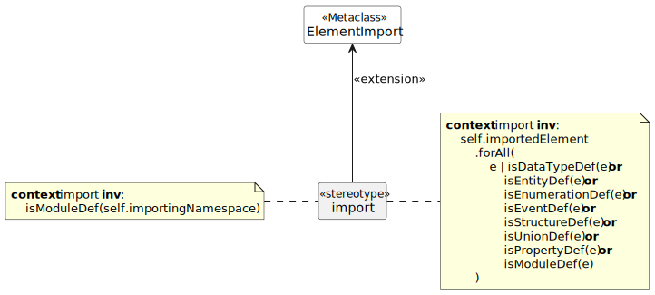
Figure 19: The «import» Stereotype
Constraints
TBD
Example: Importing a Module
The following demonstrates the importing of the module named sdml into the current module. Following the notation in
section 7.4.4 of the UML specification, imports are represented with a dashed line and the keyword «import».
module rentals is import sdml end
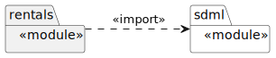
Figure 20: Importing a Module
Example: Importing Module Members
The following demonstrates the importing of the members named dc:description and skos:prefLabel into the current module.
module rentals is import skos:prefLabel import dc:description end
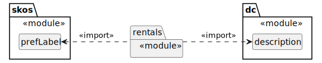
Figure 21: Importing Module Members
11.4. Annotations
TBD
11.5. Data Type Definitions
The profile element «datatype» is a specialization of the UML PrimitiveType (section 10.2.3.2 of the UML specification)
classifier.

Figure 22: The «datatype» Stereotype
Example: A Datatype Example
The following simple datatype definition restricts the type sdml:string.
module rentals is datatype VehicleIdNumber <- string end

Figure 23: A Datatype Example
11.6. Entity Definitions

Figure 24: The «entity» Stereotype
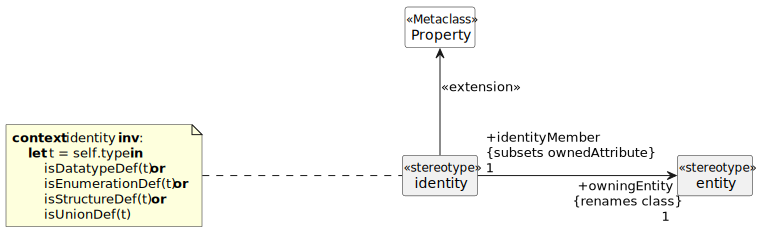
Figure 25: The «identity» Stereotypes
!!!
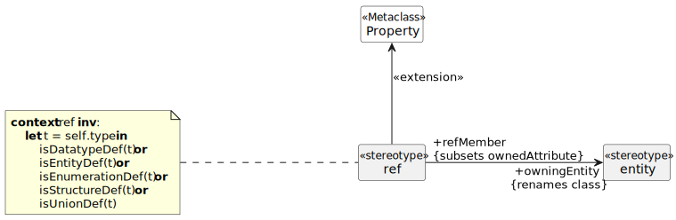
Figure 26: The and «ref» Stereotypes
For details on by-value members and groups see section 11.9 below.
Constraints
- The
«identity»stereotype renames the meta-associationclasstoowningEntity, with type«entity»and multiplicity1..1. - The
«identity»stereotype - The
«ref»stereotype
Example: An Entity Example
module rentals is import uuid datatype VehicleIdNumber <- string entity Vehicle is identity vin -> VehicleIdNumber end entity Booking is identity id -> uuid::Uuid ref vehicle -> {0..1} Vehicle end end

Figure 27: An Entity Example
11.7. Enumeration Definitions
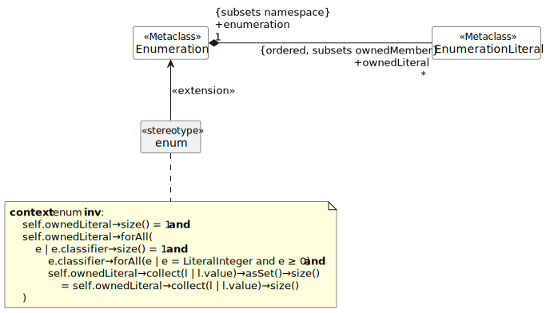
Figure 28: The «enum» Stereotype
The standard Enumeration classifier is used to model enum definitions.
The standard EnumerationLiteral instance is used to model value variants.
Constraints
Example: An Example Enumeration
module rentals is enum VehicleClass of SubCompact = 0 Compact = 1 MidSize = 2 FullSize = 3 CompactSuv = 4 FullSizeSuv = 5 end end
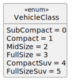
Figure 29: An Example Enumeration
11.8. Event Definitions
The standard Signal (10.3.3.1) and Dependency

Figure 30: The «event» and «source» Stereotypes
For details on by-value members and groups see section 11.9 below.
Example: An Example Event
module rentals is import uuid entity Booking is identity id -> uuid:Uuid end event VehicleAssigned source Booking end

Figure 31: An Example Event
11.10. Union Definitions
Generalization Sets (9.7)

Figure 32: The «union» and «variant» Stereotypes
Constraints
Example: An Example Union
module rentals is import uuid structure Car structure Van structure Truck union RentalClass of Car Van Truck end end

Figure 33: An Example Union
11.11. Property Definitions
TBD
11.12. Member Cardinality
UML
(section 7.5 – Types and Multiplicities)
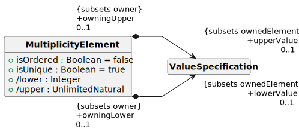
Figure 34: UML Multiplicity Element
While the type Integer is clear in the UML above, the type UnlimitedNatural is best defined by the text from the UML
specification itself:
An instance of
UnlimitedNaturalis a value in the (infinite) set of natural numbers (0, 1, 2…) plus unlimited. The value of unlimited is shown using an asterisk (‘*’).UnlimitedNaturalvalues are typically used to denote the upper bound of a range, such as a multiplicity; unlimited is used whenever the range is specified to have no upper bound.
Using the following example from the UML specification, actually combining the two diagrams from section 7.5.5 of the specification into one.
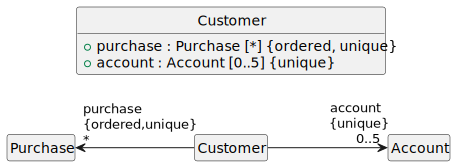
Figure 35: UML Multiplicity Example
Either of these representations corresponds to the following SDML structure.
module customer is structure Purchase structure Account structure Customer is purchase -> {ordered unique 0..} Purchase account -> {unique 0..5} Account end end
12. License
Copyright 2023 Simon Johnston <johnstonskj@gmail.com>
Licensed under the Apache License, Version 2.0 (the "License");
you may not use this file except in compliance with the License.
You may obtain a copy of the License at
http://www.apache.org/licenses/LICENSE-2.0
Unless required by applicable law or agreed to in writing, software
distributed under the License is distributed on an "AS IS" BASIS,
WITHOUT WARRANTIES OR CONDITIONS OF ANY KIND, either express or implied.
See the License for the specific language governing permissions and
limitations under the License.
13. Tables of Other Content
List of Tables
- Table 1: Domain-Related Model Summary
- Table 2: String Escape Characters
- Table 3: OWL Built-in Datatype Facets
- Table 4: Built-in Simple Type Mapping
- Table 5: Logical Sequence Types
- Table 6: Summary of Member Formats
- Table 7: Informal Constraint Schemes
- Table 8: OWL: Classes
- Table 9: OWL: Object Properties
- Table 10: OWL: Datatype Properties
- Table 11: OWL: Annotation Properties
- Table 12: Commonly Used Annotation Properties
- Table 13: Unicode Characters in Grammar
- Table 14: Summary of Value Literals
List of Listings
- Listing 1: Comments
- Listing 2: Annotation Comments
- Listing 3: Empty Module
- Listing 4: Empty Module with Base
- Listing 5: Importing Module
- Listing 6: Importing Member
- Listing 7: Importing a List
- Listing 8: Binary Value Example
- Listing 9: Value Constructor Example
- Listing 10: Mapping List Example
- Listing 11: Sequence Value Example
- Listing 12: Sequence Value Example
- Listing 13: New Datatype
- Listing 14: New Datatype with Restrictions
- Listing 15: Annotation Property
- Listing 16: Annotation Property List
- Listing 17: Annotated Module
- Listing 18: Informal Constraint on Module
- Listing 19: Formal Constraint on Module
- Listing 20: The definition of rdfs:comment
- Listing 21: The SDML definition of rdfs:comment
- Listing 22: Members in a Structure
- Listing 23: Empty Structure
- Listing 24: Annotated Structure
- Listing 25: Structure Members
- Listing 26: Structure Members and Groups
- Listing 27: Empty Entity
- Listing 28: Entity with Identifying Member
- Listing 29: Entity with Reference Member
- Listing 30: Empty Event
- Listing 31: Event
- Listing 32: Empty Enum
- Listing 33: Enum With Variants
- Listing 34: Empty Union
- Listing 35: Union With Variants
- Listing 36: Empty Property Definition
- Listing 37: Property Definition with Roles
- Listing 38: Union Type Definition
- Listing 39: Union Type As Property
- Listing 40: Example Informal Constraint
- Listing 41: Informal Constraint with Natural Language
- Listing 42: Informal Constraint with Controlled Language
- Listing 43: Example Formal Constraint (1 of 3)
- Listing 44: Example Formal Constraint (2 of 3)
- Listing 45: Example Formal Constraint (3 of 3)
- Listing 46: Example Formal Constraint
- Listing 47: OWL: Ontology Header
- Listing 48: Rentals Concepts (First Pass)
- Listing 49: Rentals Basic Relationships
- Listing 50: Rentals More Detail
- Listing 51: Rentals Non-Entity Detail
- Listing 52: Rentals Structural Detail
- Listing 53: SDML Catalog Grammar
- Listing 54: Example SDML Catalog File
- Listing 55: Example SDML Catalog File with Groups
Footnotes:
Home at sdmi.io, source at github.com
Domain-Driven Design, Wikipedia
Model-Driven Development, Wikipedia
Thrift interface description language, Apache Software Foundation
Unicode General Category, Unicode.org
SPARQL 1.1 Overview, W3C
RDF 1.1 Turtle – Terse RDF Triple Language, §6.3 IRI References, W3C
DublinCoreDCMI Metadata Terms, DublinCore
Extended Backus-Naur Form (EBNF), Wikipedia
Common Logic Controlled English, John F. Sowa, 2004.
Attempto Controlled English (ACE), University of Zurich
Vehicle identification number, Wikipedia
Home at Tree Sitter, source at github.com
Installing Cargo from the Cargo book
RDF 1.1 Turtle – Terse RDF Triple Language, §2.3 Object Lists, W3C
RDF 1.1 Turtle – Terse RDF Triple Language, §2.8 Collections, W3C